Single page HTML
Single page HTML PDF
PDF .epub
.epub book cover
book coverIntroduction
I wanted a text that would bring together the ideas behind many of the more recent distributed systems - systems such as Amazon's Dynamo, Google's BigTable and MapReduce, Apache's Hadoop and so on.
In this text I've tried to provide a more accessible introduction to distributed systems. To me, that means two things: introducing the key concepts that you will need in order to have a good time reading more serious texts, and providing a narrative that covers things in enough detail that you get a gist of what's going on without getting stuck on details. It's 2013, you've got the Internet, and you can selectively read more about the topics you find most interesting.
In my view, much of distributed programming is about dealing with the implications of two consequences of distribution:
- that information travels at the speed of light
- that independent things fail independently*
In other words, that the core of distributed programming is dealing with distance (duh!) and having more than one thing (duh!). These constraints define a space of possible system designs, and my hope is that after reading this you'll have a better sense of how distance, time and consistency models interact.
This text is focused on distributed programming and systems concepts you'll need to understand commercial systems in the data center. It would be madness to attempt to cover everything. You'll learn many key protocols and algorithms (covering, for example, many of the most cited papers in the discipline), including some new exciting ways to look at eventual consistency that haven't still made it into college textbooks - such as CRDTs and the CALM theorem.
I hope you like it! If you want to say thanks, follow me on Github (or Twitter). And if you spot an error, file a pull request on Github.
1. Basics
The first chapter covers distributed systems at a high level by introducing a number of important terms and concepts. It covers high level goals, such as scalability, availability, performance, latency and fault tolerance; how those are hard to achieve, and how abstractions and models as well as partitioning and replication come into play.
2. Up and down the level of abstraction
The second chapter dives deeper into abstractions and impossibility results. It starts with a Nietzsche quote, and then introduces system models and the many assumptions that are made in a typical system model. It then discusses the CAP theorem and summarizes the FLP impossibility result. It then turns to the implications of the CAP theorem, one of which is that one ought to explore other consistency models. A number of consistency models are then discussed.
3. Time and order
A big part of understanding distributed systems is about understanding time and order. To the extent that we fail to understand and model time, our systems will fail. The third chapter discusses time and order, and clocks as well as the various uses of time, order and clocks (such as vector clocks and failure detectors).
4. Replication: preventing divergence
The fourth chapter introduces the replication problem, and the two basic ways in which it can be performed. It turns out that most of the relevant characteristics can be discussed with just this simple characterization. Then, replication methods for maintaining single-copy consistency are discussed from the least fault tolerant (2PC) to Paxos.
5. Replication: accepting divergence
The fifth chapter discussed replication with weak consistency guarantees. It introduces a basic reconciliation scenario, where partitioned replicas attempt to reach agreement. It then discusses Amazon's Dynamo as an example of a system design with weak consistency guarantees. Finally, two perspectives on disorderly programming are discussed: CRDTs and the CALM theorem.
Appendix
The appendix covers recommendations for further reading.
*: This is a lie. This post by Jay Kreps elaborates.
1. Distributed systems at a high level
Distributed programming is the art of solving the same problem that you can solve on a single computer using multiple computers.
There are two basic tasks that any computer system needs to accomplish:
- storage and
- computation
Distributed programming is the art of solving the same problem that you can solve on a single computer using multiple computers - usually, because the problem no longer fits on a single computer.
Nothing really demands that you use distributed systems. Given infinite money and infinite R&D time, we wouldn't need distributed systems. All computation and storage could be done on a magic box - a single, incredibly fast and incredibly reliable system that you pay someone else to design for you.
However, few people have infinite resources. Hence, they have to find the right place on some real-world cost-benefit curve. At a small scale, upgrading hardware is a viable strategy. However, as problem sizes increase you will reach a point where either the hardware upgrade that allows you to solve the problem on a single node does not exist, or becomes cost-prohibitive. At that point, I welcome you to the world of distributed systems.
It is a current reality that the best value is in mid-range, commodity hardware - as long as the maintenance costs can be kept down through fault-tolerant software.
Computations primarily benefit from high-end hardware to the extent to which they can replace slow network accesses with internal memory accesses. The performance advantage of high-end hardware is limited in tasks that require large amounts of communication between nodes.
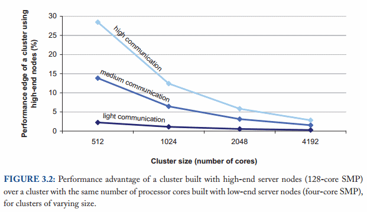
As the figure above from Barroso, Clidaras & Hölzle shows, the performance gap between high-end and commodity hardware decreases with cluster size assuming a uniform memory access pattern across all nodes.
Ideally, adding a new machine would increase the performance and capacity of the system linearly. But of course this is not possible, because there is some overhead that arises due to having separate computers. Data needs to be copied around, computation tasks have to be coordinated and so on. This is why it's worthwhile to study distributed algorithms - they provide efficient solutions to specific problems, as well as guidance about what is possible, what the minimum cost of a correct implementation is, and what is impossible.
The focus of this text is on distributed programming and systems in a mundane, but commercially relevant setting: the data center. For example, I will not discuss specialized problems that arise from having an exotic network configuration, or that arise in a shared-memory setting. Additionally, the focus is on exploring the system design space rather than on optimizing any specific design - the latter is a topic for a much more specialized text.
What we want to achieve: Scalability and other good things
The way I see it, everything starts with the need to deal with size.
Most things are trivial at a small scale - and the same problem becomes much harder once you surpass a certain size, volume or other physically constrained thing. It's easy to lift a piece of chocolate, it's hard to lift a mountain. It's easy to count how many people are in a room, and hard to count how many people are in a country.
So everything starts with size - scalability. Informally speaking, in a scalable system as we move from small to large, things should not get incrementally worse. Here's another definition:
- Scalability
- is the ability of a system, network, or process, to handle a growing amount of work in a capable manner or its ability to be enlarged to accommodate that growth.
What is it that is growing? Well, you can measure growth in almost any terms (number of people, electricity usage etc.). But there are three particularly interesting things to look at:
- Size scalability: adding more nodes should make the system linearly faster; growing the dataset should not increase latency
- Geographic scalability: it should be possible to use multiple data centers to reduce the time it takes to respond to user queries, while dealing with cross-data center latency in some sensible manner.
- Administrative scalability: adding more nodes should not increase the administrative costs of the system (e.g. the administrators-to-machines ratio).
Of course, in a real system growth occurs on multiple different axes simultaneously; each metric captures just some aspect of growth.
A scalable system is one that continues to meet the needs of its users as scale increases. There are two particularly relevant aspects - performance and availability - which can be measured in various ways.
Performance (and latency)
- Performance
- is characterized by the amount of useful work accomplished by a computer system compared to the time and resources used.
Depending on the context, this may involve achieving one or more of the following:
- Short response time/low latency for a given piece of work
- High throughput (rate of processing work)
- Low utilization of computing resource(s)
There are tradeoffs involved in optimizing for any of these outcomes. For example, a system may achieve a higher throughput by processing larger batches of work thereby reducing operation overhead. The tradeoff would be longer response times for individual pieces of work due to batching.
I find that low latency - achieving a short response time - is the most interesting aspect of performance, because it has a strong connection with physical (rather than financial) limitations. It is harder to address latency using financial resources than the other aspects of performance.
There are a lot of really specific definitions for latency, but I really like the idea that the etymology of the word evokes:
- Latency
- The state of being latent; delay, a period between the initiation of something and the occurrence.
And what does it mean to be "latent"?
- Latent
- From Latin latens, latentis, present participle of lateo ("lie hidden"). Existing or present but concealed or inactive.
This definition is pretty cool, because it highlights how latency is really the time between something happened and the time it has an impact or becomes visible.
For example, imagine that you are infected with an airborne virus that turns people into zombies. The latent period is the time between when you became infected, and when you turn into a zombie. That's latency: the time during which something that has already happened is concealed from view.
Let's assume for a moment that our distributed system does just one high-level task: given a query, it takes all of the data in the system and calculates a single result. In other words, think of a distributed system as a data store with the ability to run a single deterministic computation (function) over its current content:
result = query(all data in the system)
Then, what matters for latency is not the amount of old data, but rather the speed at which new data "takes effect" in the system. For example, latency could be measured in terms of how long it takes for a write to become visible to readers.
The other key point based on this definition is that if nothing happens, there is no "latent period". A system in which data doesn't change doesn't (or shouldn't) have a latency problem.
In a distributed system, there is a minimum latency that cannot be overcome: the speed of light limits how fast information can travel, and hardware components have a minimum latency cost incurred per operation (think RAM and hard drives but also CPUs).
How much that minimum latency impacts your queries depends on the nature of those queries and the physical distance the information needs to travel.
Availability (and fault tolerance)
The second aspect of a scalable system is availability.
- Availability
- the proportion of time a system is in a functioning condition. If a user cannot access the system, it is said to be unavailable.
Distributed systems allow us to achieve desirable characteristics that would be hard to accomplish on a single system. For example, a single machine cannot tolerate any failures since it either fails or doesn't.
Distributed systems can take a bunch of unreliable components, and build a reliable system on top of them.
Systems that have no redundancy can only be as available as their underlying components. Systems built with redundancy can be tolerant of partial failures and thus be more available. It is worth noting that "redundant" can mean different things depending on what you look at - components, servers, datacenters and so on.
Formulaically, availability is: Availability = uptime / (uptime + downtime).
Availability from a technical perspective is mostly about being fault tolerant. Because the probability of a failure occurring increases with the number of components, the system should be able to compensate so as to not become less reliable as the number of components increases.
For example:
| Availability % | How much downtime is allowed per year? |
| 90% ("one nine") | More than a month |
| 99% ("two nines") | Less than 4 days |
| 99.9% ("three nines") | Less than 9 hours |
| 99.99% ("four nines") | Less than an hour |
| 99.999% ("five nines") | ~ 5 minutes |
| 99.9999% ("six nines") | ~ 31 seconds |
Availability is in some sense a much wider concept than uptime, since the availability of a service can also be affected by, say, a network outage or the company owning the service going out of business (which would be a factor which is not really relevant to fault tolerance but would still influence the availability of the system). But without knowing every single specific aspect of the system, the best we can do is design for fault tolerance.
What does it mean to be fault tolerant?
- Fault tolerance
- ability of a system to behave in a well-defined manner once faults occur
Fault tolerance boils down to this: define what faults you expect and then design a system or an algorithm that is tolerant of them. You can't tolerate faults you haven't considered.
What prevents us from achieving good things?
Distributed systems are constrained by two physical factors:
- the number of nodes (which increases with the required storage and computation capacity)
- the distance between nodes (information travels, at best, at the speed of light)
Working within those constraints:
- an increase in the number of independent nodes increases the probability of failure in a system (reducing availability and increasing administrative costs)
- an increase in the number of independent nodes may increase the need for communication between nodes (reducing performance as scale increases)
- an increase in geographic distance increases the minimum latency for communication between distant nodes (reducing performance for certain operations)
Beyond these tendencies - which are a result of the physical constraints - is the world of system design options.
Both performance and availability are defined by the external guarantees the system makes. On a high level, you can think of the guarantees as the SLA (service level agreement) for the system: if I write data, how quickly can I access it elsewhere? After the data is written, what guarantees do I have of durability? If I ask the system to run a computation, how quickly will it return results? When components fail, or are taken out of operation, what impact will this have on the system?
There is another criterion, which is not explicitly mentioned but implied: intelligibility. How understandable are the guarantees that are made? Of course, there are no simple metrics for what is intelligible.
I was kind of tempted to put "intelligibility" under physical limitations. After all, it is a hardware limitation in people that we have a hard time understanding anything that involves more moving things than we have fingers. That's the difference between an error and an anomaly - an error is incorrect behavior, while an anomaly is unexpected behavior. If you were smarter, you'd expect the anomalies to occur.
Abstractions and models
This is where abstractions and models come into play. Abstractions make things more manageable by removing real-world aspects that are not relevant to solving a problem. Models describe the key properties of a distributed system in a precise manner. I'll discuss many kinds of models in the next chapter, such as:
- System model (asynchronous / synchronous)
- Failure model (crash-fail, partitions, Byzantine)
- Consistency model (strong, eventual)
A good abstraction makes working with a system easier to understand, while capturing the factors that are relevant for a particular purpose.
There is a tension between the reality that there are many nodes and with our desire for systems that "work like a single system". Often, the most familiar model (for example, implementing a shared memory abstraction on a distributed system) is too expensive.
A system that makes weaker guarantees has more freedom of action, and hence potentially greater performance - but it is also potentially hard to reason about. People are better at reasoning about systems that work like a single system, rather than a collection of nodes.
One can often gain performance by exposing more details about the internals of the system. For example, in columnar storage, the user can (to some extent) reason about the locality of the key-value pairs within the system and hence make decisions that influence the performance of typical queries. Systems which hide these kinds of details are easier to understand (since they act more like single unit, with fewer details to think about), while systems that expose more real-world details may be more performant (because they correspond more closely to reality).
Several types of failures make writing distributed systems that act like a single system difficult. Network latency and network partitions (e.g. total network failure between some nodes) mean that a system needs to sometimes make hard choices about whether it is better to stay available but lose some crucial guarantees that cannot be enforced, or to play it safe and refuse clients when these types of failures occur.
The CAP theorem - which I will discuss in the next chapter - captures some of these tensions. In the end, the ideal system meets both programmer needs (clean semantics) and business needs (availability/consistency/latency).
Design techniques: partition and replicate
The manner in which a data set is distributed between multiple nodes is very important. In order for any computation to happen, we need to locate the data and then act on it.
There are two basic techniques that can be applied to a data set. It can be split over multiple nodes (partitioning) to allow for more parallel processing. It can also be copied or cached on different nodes to reduce the distance between the client and the server and for greater fault tolerance (replication).
Divide and conquer - I mean, partition and replicate.
The picture below illustrates the difference between these two: partitioned data (A and B below) is divided into independent sets, while replicated data (C below) is copied to multiple locations.
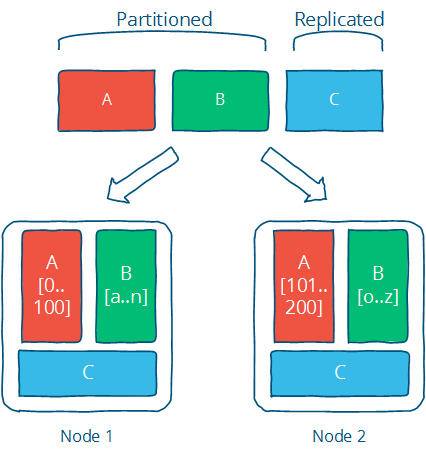
This is the one-two punch for solving any problem where distributed computing plays a role. Of course, the trick is in picking the right technique for your concrete implementation; there are many algorithms that implement replication and partitioning, each with different limitations and advantages which need to be assessed against your design objectives.
Partitioning
Partitioning is dividing the dataset into smaller distinct independent sets; this is used to reduce the impact of dataset growth since each partition is a subset of the data.
- Partitioning improves performance by limiting the amount of data to be examined and by locating related data in the same partition
- Partitioning improves availability by allowing partitions to fail independently, increasing the number of nodes that need to fail before availability is sacrificed
Partitioning is also very much application-specific, so it is hard to say much about it without knowing the specifics. That's why the focus is on replication in most texts, including this one.
Partitioning is mostly about defining your partitions based on what you think the primary access pattern will be, and dealing with the limitations that come from having independent partitions (e.g. inefficient access across partitions, different rate of growth etc.).
Replication
Replication is making copies of the same data on multiple machines; this allows more servers to take part in the computation.
Let me inaccurately quote Homer J. Simpson:
To replication! The cause of, and solution to all of life's problems.
Replication - copying or reproducing something - is the primary way in which we can fight latency.
- Replication improves performance by making additional computing power and bandwidth applicable to a new copy of the data
- Replication improves availability by creating additional copies of the data, increasing the number of nodes that need to fail before availability is sacrificed
Replication is about providing extra bandwidth, and caching where it counts. It is also about maintaining consistency in some way according to some consistency model.
Replication allows us to achieve scalability, performance and fault tolerance. Afraid of loss of availability or reduced performance? Replicate the data to avoid a bottleneck or single point of failure. Slow computation? Replicate the computation on multiple systems. Slow I/O? Replicate the data to a local cache to reduce latency or onto multiple machines to increase throughput.
Replication is also the source of many of the problems, since there are now independent copies of the data that has to be kept in sync on multiple machines - this means ensuring that the replication follows a consistency model.
The choice of a consistency model is crucial: a good consistency model provides clean semantics for programmers (in other words, the properties it guarantees are easy to reason about) and meets business/design goals such as high availability or strong consistency.
Only one consistency model for replication - strong consistency - allows you to program as-if the underlying data was not replicated. Other consistency models expose some internals of the replication to the programmer. However, weaker consistency models can provide lower latency and higher availability - and are not necessarily harder to understand, just different.
Further reading
- The Datacenter as a Computer - An Introduction to the Design of Warehouse-Scale Machines - Barroso & Hölzle, 2008
- Fallacies of Distributed Computing
- Notes on Distributed Systems for Young Bloods - Hodges, 2013
2. Up and down the level of abstraction
In this chapter, we'll travel up and down the level of abstraction; look at some impossibility results (CAP and FLP) and then travel back down for the sake of performance.
If you've done any programming, the idea of levels of abstraction is probably familiar to you. You'll always work at some level of abstraction, interface with a lower level layer through some API, and probably provide some higher-level API or user interface to your users. The seven-layer OSI model of computer networking is a good example of this.
Distributed programming is, I'd assert, in large part dealing with consequences of distribution (duh!). That is, there is a tension between the reality that there are many nodes and with our desire for systems that "work like a single system". That means finding a good abstraction that balances what is possible with what is understandable and performant.
What do we mean when say X is more abstract than Y? First, that X does not introduce anything new or fundamentally different from Y. In fact, X may remove some aspects of Y or present them in a way that makes them more manageable. Second, that X is in some sense easier to grasp than Y, assuming that the things that X removed from Y are not important to the matter at hand.
As Nietzsche wrote:
Every concept originates through our equating what is unequal. No leaf ever wholly equals another, and the concept "leaf" is formed through an arbitrary abstraction from these individual differences, through forgetting the distinctions; and now it gives rise to the idea that in nature there might be something besides the leaves which would be "leaf" - some kind of original form after which all leaves have been woven, marked, copied, colored, curled, and painted, but by unskilled hands, so that no copy turned out to be a correct, reliable, and faithful image of the original form.
Abstractions, fundamentally, are fake. Every situation is unique, as is every node. But abstractions make the world manageable: simpler problem statements - free of reality - are much more analytically tractable and provided that we did not ignore anything essential, the solutions are widely applicable.
Indeed, if the things that we kept around are essential, then the results we can derive will be widely applicable. This is why impossibility results are so important: they take the simplest possible formulation of a problem, and demonstrate that it is impossible to solve within some set of constraints or assumptions.
All abstractions ignore something in favor of equating things that are in reality unique. The trick is to get rid of everything that is not essential. How do you know what is essential? Well, you probably won't know a priori.
Every time we exclude some aspect of a system from our specification of the system, we risk introducing a source of error and/or a performance issue. That's why sometimes we need to go in the other direction, and selectively introduce some aspects of real hardware and the real-world problem back. It may be sufficient to reintroduce some specific hardware characteristics (e.g. physical sequentiality) or other physical characteristics to get a system that performs well enough.
With this in mind, what is the least amount of reality we can keep around while still working with something that is still recognizable as a distributed system? A system model is a specification of the characteristics we consider important; having specified one, we can then take a look at some impossibility results and challenges.
A system model
A key property of distributed systems is distribution. More specifically, programs in a distributed system:
- run concurrently on independent nodes ...
- are connected by a network that may introduce nondeterminism and message loss ...
- and have no shared memory or shared clock.
There are many implications:
- each node executes a program concurrently
- knowledge is local: nodes have fast access only to their local state, and any information about global state is potentially out of date
- nodes can fail and recover from failure independently
- messages can be delayed or lost (independent of node failure; it is not easy to distinguish network failure and node failure)
- and clocks are not synchronized across nodes (local timestamps do not correspond to the global real time order, which cannot be easily observed)
A system model enumerates the many assumptions associated with a particular system design.
- System model
- a set of assumptions about the environment and facilities on which a distributed system is implemented
System models vary in their assumptions about the environment and facilities. These assumptions include:
- what capabilities the nodes have and how they may fail
- how communication links operate and how they may fail and
- properties of the overall system, such as assumptions about time and order
A robust system model is one that makes the weakest assumptions: any algorithm written for such a system is very tolerant of different environments, since it makes very few and very weak assumptions.
On the other hand, we can create a system model that is easy to reason about by making strong assumptions. For example, assuming that nodes do not fail means that our algorithm does not need to handle node failures. However, such a system model is unrealistic and hence hard to apply into practice.
Let's look at the properties of nodes, links and time and order in more detail.
Nodes in our system model
Nodes serve as hosts for computation and storage. They have:
- the ability to execute a program
- the ability to store data into volatile memory (which can be lost upon failure) and into stable state (which can be read after a failure)
- a clock (which may or may not be assumed to be accurate)
Nodes execute deterministic algorithms: the local computation, the local state after the computation, and the messages sent are determined uniquely by the message received and local state when the message was received.
There are many possible failure models which describe the ways in which nodes can fail. In practice, most systems assume a crash-recovery failure model: that is, nodes can only fail by crashing, and can (possibly) recover after crashing at some later point.
Another alternative is to assume that nodes can fail by misbehaving in any arbitrary way. This is known as Byzantine fault tolerance. Byzantine faults are rarely handled in real world commercial systems, because algorithms resilient to arbitrary faults are more expensive to run and more complex to implement. I will not discuss them here.
Communication links in our system model
Communication links connect individual nodes to each other, and allow messages to be sent in either direction. Many books that discuss distributed algorithms assume that there are individual links between each pair of nodes, that the links provide FIFO (first in, first out) order for messages, that they can only deliver messages that were sent, and that sent messages can be lost.
Some algorithms assume that the network is reliable: that messages are never lost and never delayed indefinitely. This may be a reasonable assumption for some real-world settings, but in general it is preferable to consider the network to be unreliable and subject to message loss and delays.
A network partition occurs when the network fails while the nodes themselves remain operational. When this occurs, messages may be lost or delayed until the network partition is repaired. Partitioned nodes may be accessible by some clients, and so must be treated differently from crashed nodes. The diagram below illustrates a node failure vs. a network partition:
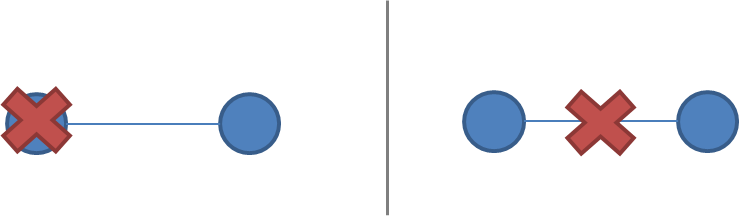
It is rare to make further assumptions about communication links. We could assume that links only work in one direction, or we could introduce different communication costs (e.g. latency due to physical distance) for different links. However, these are rarely concerns in commercial environments except for long-distance links (WAN latency) and so I will not discuss them here; a more detailed model of costs and topology allows for better optimization at the cost of complexity.
Timing / ordering assumptions
One of the consequences of physical distribution is that each node experiences the world in a unique manner. This is inescapable, because information can only travel at the speed of light. If nodes are at different distances from each other, then any messages sent from one node to the others will arrive at a different time and potentially in a different order at the other nodes.
Timing assumptions are a convenient shorthand for capturing assumptions about the extent to which we take this reality into account. The two main alternatives are:
- Synchronous system model
- Processes execute in lock-step; there is a known upper bound on message transmission delay; each process has an accurate clock
- Asynchronous system model
- No timing assumptions - e.g. processes execute at independent rates; there is no bound on message transmission delay; useful clocks do not exist
The synchronous system model imposes many constraints on time and order. It essentially assumes that the nodes have the same experience: that messages that are sent are always received within a particular maximum transmission delay, and that processes execute in lock-step. This is convenient, because it allows you as the system designer to make assumptions about time and order, while the asynchronous system model doesn't.
Asynchronicity is a non-assumption: it just assumes that you can't rely on timing (or a "time sensor").
It is easier to solve problems in the synchronous system model, because assumptions about execution speeds, maximum message transmission delays and clock accuracy all help in solving problems since you can make inferences based on those assumptions and rule out inconvenient failure scenarios by assuming they never occur.
Of course, assuming the synchronous system model is not particularly realistic. Real-world networks are subject to failures and there are no hard bounds on message delay. Real world systems are at best partially synchronous: they may occasionally work correctly and provide some upper bounds, but there will be times where messages are delayed indefinitely and clocks are out of sync. I won't really discuss algorithms for synchronous systems here, but you will probably run into them in many other introductory books because they are analytically easier (but unrealistic).
The consensus problem
During the rest of this text, we'll vary the parameters of the system model. Next, we'll look at how varying two system properties:
- whether or not network partitions are included in the failure model, and
- synchronous vs. asynchronous timing assumptions
influence the system design choices by discussing two impossibility results (FLP and CAP).
Of course, in order to have a discussion, we also need to introduce a problem to solve. The problem I'm going to discuss is the consensus problem.
Several computers (or nodes) achieve consensus if they all agree on some value. More formally:
- Agreement: Every correct process must agree on the same value.
- Integrity: Every correct process decides at most one value, and if it decides some value, then it must have been proposed by some process.
- Termination: All processes eventually reach a decision.
- Validity: If all correct processes propose the same value V, then all correct processes decide V.
The consensus problem is at the core of many commercial distributed systems. After all, we want the reliability and performance of a distributed system without having to deal with the consequences of distribution (e.g. disagreements / divergence between nodes), and solving the consensus problem makes it possible to solve several related, more advanced problems such as atomic broadcast and atomic commit.
Two impossibility results
The first impossibility result, known as the FLP impossibility result, is an impossibility result that is particularly relevant to people who design distributed algorithms. The second - the CAP theorem - is a related result that is more relevant to practitioners; people who need to choose between different system designs but who are not directly concerned with the design of algorithms.
The FLP impossibility result
I will only briefly summarize the FLP impossibility result, though it is considered to be more important in academic circles. The FLP impossibility result (named after the authors, Fischer, Lynch and Patterson) examines the consensus problem under the asynchronous system model (technically, the agreement problem, which is a very weak form of the consensus problem). It is assumed that nodes can only fail by crashing; that the network is reliable, and that the typical timing assumptions of the asynchronous system model hold: e.g. there are no bounds on message delay.
Under these assumptions, the FLP result states that "there does not exist a (deterministic) algorithm for the consensus problem in an asynchronous system subject to failures, even if messages can never be lost, at most one process may fail, and it can only fail by crashing (stopping executing)".
This result means that there is no way to solve the consensus problem under a very minimal system model in a way that cannot be delayed forever. The argument is that if such an algorithm existed, then one could devise an execution of that algorithm in which it would remain undecided ("bivalent") for an arbitrary amount of time by delaying message delivery - which is allowed in the asynchronous system model. Thus, such an algorithm cannot exist.
This impossibility result is important because it highlights that assuming the asynchronous system model leads to a tradeoff: algorithms that solve the consensus problem must either give up safety or liveness when the guarantees regarding bounds on message delivery do not hold.
This insight is particularly relevant to people who design algorithms, because it imposes a hard constraint on the problems that we know are solvable in the asynchronous system model. The CAP theorem is a related theorem that is more relevant to practitioners: it makes slightly different assumptions (network failures rather than node failures), and has more clear implications for practitioners choosing between system designs.
The CAP theorem
The CAP theorem was initially a conjecture made by computer scientist Eric Brewer. It's a popular and fairly useful way to think about tradeoffs in the guarantees that a system design makes. It even has a formal proof by Gilbert and Lynch and no, Nathan Marz didn't debunk it, in spite of what a particular discussion site thinks.
The theorem states that of these three properties:
- Consistency: all nodes see the same data at the same time.
- Availability: node failures do not prevent survivors from continuing to operate.
- Partition tolerance: the system continues to operate despite message loss due to network and/or node failure
only two can be satisfied simultaneously. We can even draw this as a pretty diagram, picking two properties out of three gives us three types of systems that correspond to different intersections:
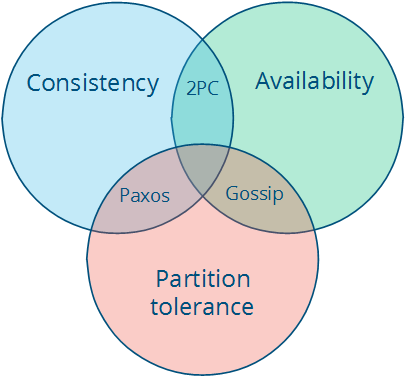
Note that the theorem states that the middle piece (having all three properties) is not achievable. Then we get three different system types:
- CA (consistency + availability). Examples include full strict quorum protocols, such as two-phase commit.
- CP (consistency + partition tolerance). Examples include majority quorum protocols in which minority partitions are unavailable such as Paxos.
- AP (availability + partition tolerance). Examples include protocols using conflict resolution, such as Dynamo.
The CA and CP system designs both offer the same consistency model: strong consistency. The only difference is that a CA system cannot tolerate any node failures; a CP system can tolerate up to f faults given 2f+1 nodes in a non-Byzantine failure model (in other words, it can tolerate the failure of a minority f of the nodes as long as majority f+1 stays up). The reason is simple:
- A CA system does not distinguish between node failures and network failures, and hence must stop accepting writes everywhere to avoid introducing divergence (multiple copies). It cannot tell whether a remote node is down, or whether just the network connection is down: so the only safe thing is to stop accepting writes.
- A CP system prevents divergence (e.g. maintains single-copy consistency) by forcing asymmetric behavior on the two sides of the partition. It only keeps the majority partition around, and requires the minority partition to become unavailable (e.g. stop accepting writes), which retains a degree of availability (the majority partition) and still ensures single-copy consistency.
I'll discuss this in more detail in the chapter on replication when I discuss Paxos. The important thing is that CP systems incorporate network partitions into their failure model and distinguish between a majority partition and a minority partition using an algorithm like Paxos, Raft or viewstamped replication. CA systems are not partition-aware, and are historically more common: they often use the two-phase commit algorithm and are common in traditional distributed relational databases.
Assuming that a partition occurs, the theorem reduces to a binary choice between availability and consistency.
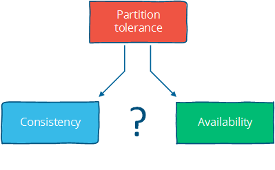
I think there are four conclusions that should be drawn from the CAP theorem:
First, that many system designs used in early distributed relational database systems did not take into account partition tolerance (e.g. they were CA designs). Partition tolerance is an important property for modern systems, since network partitions become much more likely if the system is geographically distributed (as many large systems are).
Second, that there is a tension between strong consistency and high availability during network partitions. The CAP theorem is an illustration of the tradeoffs that occur between strong guarantees and distributed computation.
In some sense, it is quite crazy to promise that a distributed system consisting of independent nodes connected by an unpredictable network "behaves in a way that is indistinguishable from a non-distributed system".
Strong consistency guarantees require us to give up availability during a partition. This is because one cannot prevent divergence between two replicas that cannot communicate with each other while continuing to accept writes on both sides of the partition.
How can we work around this? By strengthening the assumptions (assume no partitions) or by weakening the guarantees. Consistency can be traded off against availability (and the related capabilities of offline accessibility and low latency). If "consistency" is defined as something less than "all nodes see the same data at the same time" then we can have both availability and some (weaker) consistency guarantee.
Third, that there is a tension between strong consistency and performance in normal operation.
Strong consistency / single-copy consistency requires that nodes communicate and agree on every operation. This results in high latency during normal operation.
If you can live with a consistency model other than the classic one; a consistency model that allows replicas to lag or to diverge, then you can reduce latency during normal operation and maintain availability in the presence of partitions.
When fewer messages and fewer nodes are involved, an operation can complete faster. But the only way to accomplish that is to relax the guarantees: let some of the nodes be contacted less frequently, which means that nodes can contain old data.
This also makes it possible for anomalies to occur. You are no longer guaranteed to get the most recent value. Depending on what kinds of guarantees are made, you might read a value that is older than expected, or even lose some updates.
Fourth - and somewhat indirectly - that if we do not want to give up availability during a network partition, then we need to explore whether consistency models other than strong consistency are workable for our purposes.
For example, even if user data is georeplicated to multiple datacenters, and the link between those two datacenters is temporarily out of order, in many cases we'll still want to allow the user to use the website / service. This means reconciling two divergent sets of data later on, which is both a technical challenge and a business risk. But often both the technical challenge and the business risk are manageable, and so it is preferable to provide high availability.
Consistency and availability are not really binary choices, unless you limit yourself to strong consistency. But strong consistency is just one consistency model: the one where you, by necessity, need to give up availability in order to prevent more than a single copy of the data from being active. As Brewer himself points out, the "2 out of 3" interpretation is misleading.
If you take away just one idea from this discussion, let it be this: "consistency" is not a singular, unambiguous property. Remember:
Instead, a consistency model is a guarantee - any guarantee - that a data store gives to programs that use it.
- Consistency model
- a contract between programmer and system, wherein the system guarantees that if the programmer follows some specific rules, the results of operations on the data store will be predictable
The "C" in CAP is "strong consistency", but "consistency" is not a synonym for "strong consistency".
Let's take a look at some alternative consistency models.
Strong consistency vs. other consistency models
Consistency models can be categorized into two types: strong and weak consistency models:
- Strong consistency models (capable of maintaining a single copy)
- Linearizable consistency
- Sequential consistency
- Weak consistency models (not strong)
- Client-centric consistency models
- Causal consistency: strongest model available
- Eventual consistency models
Strong consistency models guarantee that the apparent order and visibility of updates is equivalent to a non-replicated system. Weak consistency models, on the other hand, do not make such guarantees.
Note that this is by no means an exhaustive list. Again, consistency models are just arbitrary contracts between the programmer and system, so they can be almost anything.
Strong consistency models
Strong consistency models can further be divided into two similar, but slightly different consistency models:
- Linearizable consistency: Under linearizable consistency, all operations appear to have executed atomically in an order that is consistent with the global real-time ordering of operations. (Herlihy & Wing, 1991)
- Sequential consistency: Under sequential consistency, all operations appear to have executed atomically in some order that is consistent with the order seen at individual nodes and that is equal at all nodes. (Lamport, 1979)
The key difference is that linearizable consistency requires that the order in which operations take effect is equal to the actual real-time ordering of operations. Sequential consistency allows for operations to be reordered as long as the order observed on each node remains consistent. The only way someone can distinguish between the two is if they can observe all the inputs and timings going into the system; from the perspective of a client interacting with a node, the two are equivalent.
The difference seems immaterial, but it is worth noting that sequential consistency does not compose.
Strong consistency models allow you as a programmer to replace a single server with a cluster of distributed nodes and not run into any problems.
All the other consistency models have anomalies (compared to a system that guarantees strong consistency), because they behave in a way that is distinguishable from a non-replicated system. But often these anomalies are acceptable, either because we don't care about occasional issues or because we've written code that deals with inconsistencies after they have occurred in some way.
Note that there really aren't any universal typologies for weak consistency models, because "not a strong consistency model" (e.g. "is distinguishable from a non-replicated system in some way") can be almost anything.
Client-centric consistency models
Client-centric consistency models are consistency models which involve the notion of a client or session in some way. For example, a client-centric consistency model might guarantee that a client will never see older versions of a data item. This is often implemented by building additional caching into the client library, so that if a client moves to a replica node that contains old data, then the client library returns its cached value rather than the old value from the replica.
Clients may still see older versions of the data, if the replica node they are on does not contain the latest version, but they will never see anomalies where an older version of a value resurfaces (e.g. because they connected to a different replica). Note that there are many kinds of consistency models that are client-centric.
Eventual consistency
The eventual consistency model says that if you stop changing values, then after some undefined amount of time all replicas will agree on the same value. It is implied that before that time results between replicas are inconsistent in some undefined manner. Since it is trivially satisfiable (liveness property only), it is useless without supplemental information.
Saying something is merely eventually consistent is like saying "people are eventually dead". It's a very weak constraint, and we'd probably want to have at least some more specific characterization of two things:
First, how long is "eventually"? It would be useful to have a strict lower bound, or at least some idea of how long it typically takes for the system to converge to the same value.
Second, how do the replicas agree on a value? A system that always returns "42" is eventually consistent: all replicas agree on the same value. It just doesn't converge to a useful value since it just keeps returning the same fixed value. Instead, we'd like to have a better idea of the method. For example, one way to decide is to have the value with the largest timestamp always win.
So when vendors say "eventual consistency", what they mean is some more precise term, such as "eventually last-writer-wins, and read-the-latest-observed-value in the meantime" consistency. The "how?" matters, because a bad method can lead to writes being lost - for example, if the clock on one node is set incorrectly and timestamps are used.
I will look into these two questions in more detail in the chapter on replication methods for weak consistency models.
Further reading
- Brewer's Conjecture and the Feasibility of Consistent, Available, Partition-Tolerant Web Services - Gilbert & Lynch, 2002
- Impossibility of distributed consensus with one faulty process - Fischer, Lynch and Patterson, 1985
- Perspectives on the CAP Theorem - Gilbert & Lynch, 2012
- CAP Twelve Years Later: How the "Rules" Have Changed - Brewer, 2012
- Uniform consensus is harder than consensus - Charron-Bost & Schiper, 2000
- Replicated Data Consistency Explained Through Baseball - Terry, 2011
- Life Beyond Distributed Transactions: an Apostate's Opinion - Helland, 2007
- If you have too much data, then 'good enough' is good enough - Helland, 2011
- Building on Quicksand - Helland & Campbell, 2009
3. Time and order
What is order and why is it important?
What do you mean "what is order"?
I mean, why are we so obsessed with order in the first place? Why do we care whether A happened before B? Why don't we care about some other property, like "color"?
Well, my crazy friend, let's go back to the definition of distributed systems to answer that.
As you may remember, I described distributed programming as the art of solving the same problem that you can solve on a single computer using multiple computers.
This is, in fact, at the core of the obsession with order. Any system that can only do one thing at a time will create a total order of operations. Like people passing through a single door, every operation will have a well-defined predecessor and successor. That's basically the programming model that we've worked very hard to preserve.
The traditional model is: a single program, one process, one memory space running on one CPU. The operating system abstracts away the fact that there might be multiple CPUs and multiple programs, and that the memory on the computer is actually shared among many programs. I'm not saying that threaded programming and event-oriented programming don't exist; it's just that they are special abstractions on top of the "one/one/one" model. Programs are written to be executed in an ordered fashion: you start from the top, and then go down towards the bottom.
Order as a property has received so much attention because the easiest way to define "correctness" is to say "it works like it would on a single machine". And that usually means that a) we run the same operations and b) that we run them in the same order - even if there are multiple machines.
The nice thing about distributed systems that preserve order (as defined for a single system) is that they are generic. You don't need to care about what the operations are, because they will be executed exactly like on a single machine. This is great because you know that you can use the same system no matter what the operations are.
In reality, a distributed program runs on multiple nodes; with multiple CPUs and multiple streams of operations coming in. You can still assign a total order, but it requires either accurate clocks or some form of communication. You could timestamp each operation using a completely accurate clock then use that to figure out the total order. Or you might have some kind of communication system that makes it possible to assign sequential numbers as in a total order.
Total and partial order
The natural state in a distributed system is partial order. Neither the network nor independent nodes make any guarantees about relative order; but at each node, you can observe a local order.
A total order is a binary relation that defines an order for every element in some set.
Two distinct elements are comparable when one of them is greater than the other. In a partially ordered set, some pairs of elements are not comparable and hence a partial order doesn't specify the exact order of every item.
Both total order and partial order are transitive and antisymmetric. The following statements hold in both a total order and a partial order for all a, b and c in X:
If a ≤ b and b ≤ a then a = b (antisymmetry); If a ≤ b and b ≤ c then a ≤ c (transitivity);
However, a total order is total:
a ≤ b or b ≤ a (totality) for all a, b in X
while a partial order is only reflexive:
a ≤ a (reflexivity) for all a in X
Note that totality implies reflexivity; so a partial order is a weaker variant of total order. For some elements in a partial order, the totality property does not hold - in other words, some of the elements are not comparable.
Git branches are an example of a partial order. As you probably know, the git revision control system allows you to create multiple branches from a single base branch - e.g. from a master branch. Each branch represents a history of source code changes derived based on a common ancestor:
[ branch A (1,2,0)] [ master (3,0,0) ] [ branch B (1,0,2) ]
[ branch A (1,1,0)] [ master (2,0,0) ] [ branch B (1,0,1) ]
\ [ master (1,0,0) ] /
The branches A and B were derived from a common ancestor, but there is no definite order between them: they represent different histories and cannot be reduced to a single linear history without additional work (merging). You could, of course, put all the commits in some arbitrary order (say, sorting them first by ancestry and then breaking ties by sorting A before B or B before A) - but that would lose information by forcing a total order where none existed.
In a system consisting of one node, a total order emerges by necessity: instructions are executed and messages are processed in a specific, observable order in a single program. We've come to rely on this total order - it makes executions of programs predictable. This order can be maintained on a distributed system, but at a cost: communication is expensive, and time synchronization is difficult and fragile.
What is time?
Time is a source of order - it allows us to define the order of operations - which coincidentally also has an interpretation that people can understand (a second, a minute, a day and so on).
In some sense, time is just like any other integer counter. It just happens to be important enough that most computers have a dedicated time sensor, also known as a clock. It's so important that we've figured out how to synthesize an approximation of the same counter using some imperfect physical system (from wax candles to cesium atoms). By "synthesize", I mean that we can approximate the value of the integer counter in physically distant places via some physical property without communicating it directly.
Timestamps really are a shorthand value for representing the state of the world from the start of the universe to the current moment - if something occurred at a particular timestamp, then it was potentially influenced by everything that happened before it. This idea can be generalized into a causal clock that explicitly tracks causes (dependencies) rather than simply assuming that everything that preceded a timestamp was relevant. Of course, the usual assumption is that we should only worry about the state of the specific system rather than the whole world.
Assuming that time progresses at the same rate everywhere - and that is a big assumption which I'll return to in a moment - time and timestamps have several useful interpretations when used in a program. The three interpretations are:
- Order
- Duration
- Interpretation
Order. When I say that time is a source of order, what I mean is that:
- we can attach timestamps to unordered events to order them
- we can use timestamps to enforce a specific ordering of operations or the delivery of messages (for example, by delaying an operation if it arrives out of order)
- we can use the value of a timestamp to determine whether something happened chronologically before something else
Interpretation - time as a universally comparable value. The absolute value of a timestamp can be interpreted as a date, which is useful for people. Given a timestamp of when a downtime started from a log file, you can tell that it was last Saturday, when there was a thunderstorm.
Duration - durations measured in time have some relation to the real world. Algorithms generally don't care about the absolute value of a clock or its interpretation as a date, but they might use durations to make some judgment calls. In particular, the amount of time spent waiting can provide clues about whether a system is partitioned or merely experiencing high latency.
By their nature, the components of distributed systems do not behave in a predictable manner. They do not guarantee any specific order, rate of advance, or lack of delay. Each node does have some local order - as execution is (roughly) sequential - but these local orders are independent of each other.
Imposing (or assuming) order is one way to reduce the space of possible executions and possible occurrences. Humans have a hard time reasoning about things when things can happen in any order - there just are too many permutations to consider.
Does time progress at the same rate everywhere?
We all have an intuitive concept of time based on our own experience as individuals. Unfortunately, that intuitive notion of time makes it easier to picture total order rather than partial order. It's easier to picture a sequence in which things happen one after another, rather than concurrently. It is easier to reason about a single order of messages than to reason about messages arriving in different orders and with different delays.
However, when implementing distributing systems we want to avoid making strong assumptions about time and order, because the stronger the assumptions, the more fragile a system is to issues with the "time sensor" - or the onboard clock. Furthermore, imposing an order carries a cost. The more temporal nondeterminism that we can tolerate, the more we can take advantage of distributed computation.
There are three common answers to the question "does time progress at the same rate everywhere?". These are:
- "Global clock": yes
- "Local clock": no, but
- "No clock": no!
These correspond roughly to the three timing assumptions that I mentioned in the second chapter: the synchronous system model has a global clock, the partially synchronous model has a local clock, and in the asynchronous system model one cannot use clocks at all. Let's look at these in more detail.
Time with a "global-clock" assumption
The global clock assumption is that there is a global clock of perfect accuracy, and that everyone has access to that clock. This is the way we tend to think about time, because in human interactions small differences in time don't really matter.
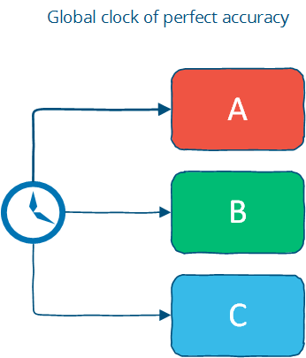
The global clock is basically a source of total order (exact order of every operation on all nodes even if those nodes have never communicated).
However, this is an idealized view of the world: in reality, clock synchronization is only possible to a limited degree of accuracy. This is limited by the lack of accuracy of clocks in commodity computers, by latency if a clock synchronization protocol such as NTP is used and fundamentally by the nature of spacetime.
Assuming that clocks on distributed nodes are perfectly synchronized means assuming that clocks start at the same value and never drift apart. It's a nice assumption because you can use timestamps freely to determine a global total order - bound by clock drift rather than latency - but this is a nontrivial operational challenge and a potential source of anomalies. There are many different scenarios where a simple failure - such as a user accidentally changing the local time on a machine, or an out-of-date machine joining a cluster, or synchronized clocks drifting at slightly different rates and so on that can cause hard-to-trace anomalies.
Nevertheless, there are some real-world systems that make this assumption. Facebook's Cassandra is an example of a system that assumes clocks are synchronized. It uses timestamps to resolve conflicts between writes - the write with the newer timestamp wins. This means that if clocks drift, new data may be ignored or overwritten by old data; again, this is an operational challenge (and from what I've heard, one that people are acutely aware of). Another interesting example is Google's Spanner: the paper describes their TrueTime API, which synchronizes time but also estimates worst-case clock drift.
Time with a "Local-clock" assumption
The second, and perhaps more plausible assumption is that each machine has its own clock, but there is no global clock. It means that you cannot use the local clock in order to determine whether a remote timestamp occurred before or after a local timestamp; in other words, you cannot meaningfully compare timestamps from two different machines.
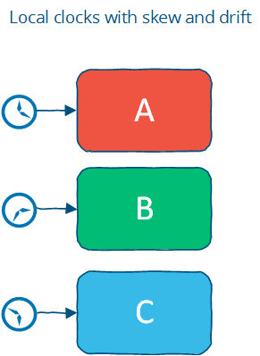
The local clock assumption corresponds more closely to the real world. It assigns a partial order: events on each system are ordered but events cannot be ordered across systems by only using a clock.
However, you can use timestamps to order events on a single machine; and you can use timeouts on a single machine as long as you are careful not to allow the clock to jump around. Of course, on a machine controlled by an end-user this is probably assuming too much: for example, a user might accidentally change their date to a different value while looking up a date using the operating system's date control.
Time with a "No-clock" assumption
Finally, there is the notion of logical time. Here, we don't use clocks at all and instead track causality in some other way. Remember, a timestamp is simply a shorthand for the state of the world up to that point - so we can use counters and communication to determine whether something happened before, after or concurrently with something else.
This way, we can determine the order of events between different machines, but cannot say anything about intervals and cannot use timeouts (since we assume that there is no "time sensor"). This is a partial order: events can be ordered on a single system using a counter and no communication, but ordering events across systems requires a message exchange.
One of the most cited papers in distributed systems is Lamport's paper on time, clocks and the ordering of events. Vector clocks, a generalization of that concept (which I will cover in more detail), are a way to track causality without using clocks. Cassandra's cousins Riak (Basho) and Voldemort (Linkedin) use vector clocks rather than assuming that nodes have access to a global clock of perfect accuracy. This allows those systems to avoid the clock accuracy issues mentioned earlier.
When clocks are not used, the maximum precision at which events can be ordered across distant machines is bound by communication latency.
How is time used in a distributed system?
What is the benefit of time?
- Time can define order across a system (without communication)
- Time can define boundary conditions for algorithms
The order of events is important in distributed systems, because many properties of distributed systems are defined in terms of the order of operations/events:
- where correctness depends on (agreement on) correct event ordering, for example serializability in a distributed database
- order can be used as a tie breaker when resource contention occurs, for example if there are two orders for a widget, fulfill the first and cancel the second one
A global clock would allow operations on two different machines to be ordered without the two machines communicating directly. Without a global clock, we need to communicate in order to determine order.
Time can also be used to define boundary conditions for algorithms - specifically, to distinguish between "high latency" and "server or network link is down". This is a very important use case; in most real-world systems timeouts are used to determine whether a remote machine has failed, or whether it is simply experiencing high network latency. Algorithms that make this determination are called failure detectors; and I will discuss them fairly soon.
Vector clocks (time for causal order)
Earlier, we discussed the different assumptions about the rate of progress of time across a distributed system. Assuming that we cannot achieve accurate clock synchronization - or starting with the goal that our system should not be sensitive to issues with time synchronization, how can we order things?
Lamport clocks and vector clocks are replacements for physical clocks which rely on counters and communication to determine the order of events across a distributed system. These clocks provide a counter that is comparable across different nodes.
A Lamport clock is simple. Each process maintains a counter using the following rules:
- Whenever a process does work, increment the counter
- Whenever a process sends a message, include the counter
- When a message is received, set the counter to
max(local_counter, received_counter) + 1
Expressed as code:
function LamportClock() {
this.value = 1;
}
LamportClock.prototype.get = function() {
return this.value;
}
LamportClock.prototype.increment = function() {
this.value++;
}
LamportClock.prototype.merge = function(other) {
this.value = Math.max(this.value, other.value) + 1;
}
A Lamport clock allows counters to be compared across systems, with a caveat: Lamport clocks define a partial order. If timestamp(a) < timestamp(b):
amay have happened beforeboramay be incomparable withb
This is known as clock consistency condition: if one event comes before another, then that event's logical clock comes before the others. If a and b are from the same causal history, e.g. either both timestamp values were produced on the same process; or b is a response to the message sent in a then we know that a happened before b.
Intuitively, this is because a Lamport clock can only carry information about one timeline / history; hence, comparing Lamport timestamps from systems that never communicate with each other may cause concurrent events to appear to be ordered when they are not.
Imagine a system that after an initial period divides into two independent subsystems which never communicate with each other.
For all events in each independent system, if a happened before b, then ts(a) < ts(b); but if you take two events from the different independent systems (e.g. events that are not causally related) then you cannot say anything meaningful about their relative order. While each part of the system has assigned timestamps to events, those timestamps have no relation to each other. Two events may appear to be ordered even though they are unrelated.
However - and this is still a useful property - from the perspective of a single machine, any message sent with ts(a) will receive a response with ts(b) which is > ts(a).
A vector clock is an extension of Lamport clock, which maintains an array [ t1, t2, ... ] of N logical clocks - one per each node. Rather than incrementing a common counter, each node increments its own logical clock in the vector by one on each internal event. Hence the update rules are:
- Whenever a process does work, increment the logical clock value of the node in the vector
- Whenever a process sends a message, include the full vector of logical clocks
- When a message is received:
- update each element in the vector to be
max(local, received) - increment the logical clock value representing the current node in the vector
- update each element in the vector to be
Again, expressed as code:
function VectorClock(value) {
// expressed as a hash keyed by node id: e.g. { node1: 1, node2: 3 }
this.value = value || {};
}
VectorClock.prototype.get = function() {
return this.value;
};
VectorClock.prototype.increment = function(nodeId) {
if(typeof this.value[nodeId] == 'undefined') {
this.value[nodeId] = 1;
} else {
this.value[nodeId]++;
}
};
VectorClock.prototype.merge = function(other) {
var result = {}, last,
a = this.value,
b = other.value;
// This filters out duplicate keys in the hash
(Object.keys(a)
.concat(b))
.sort()
.filter(function(key) {
var isDuplicate = (key == last);
last = key;
return !isDuplicate;
}).forEach(function(key) {
result[key] = Math.max(a[key] || 0, b[key] || 0);
});
this.value = result;
};
This illustration (source) shows a vector clock:

Each of the three nodes (A, B, C) keeps track of the vector clock. As events occur, they are timestamped with the current value of the vector clock. Examining a vector clock such as { A: 2, B: 4, C: 1 } lets us accurately identify the messages that (potentially) influenced that event.
The issue with vector clocks is mainly that they require one entry per node, which means that they can potentially become very large for large systems. A variety of techniques have been applied to reduce the size of vector clocks (either by performing periodic garbage collection, or by reducing accuracy by limiting the size).
We've looked at how order and causality can be tracked without physical clocks. Now, let's look at how time durations can be used for cutoff.
Failure detectors (time for cutoff)
As I stated earlier, the amount of time spent waiting can provide clues about whether a system is partitioned or merely experiencing high latency. In this case, we don't need to assume a global clock of perfect accuracy - it is simply enough that there is a reliable-enough local clock.
Given a program running on one node, how can it tell that a remote node has failed? In the absence of accurate information, we can infer that an unresponsive remote node has failed after some reasonable amount of time has passed.
But what is a "reasonable amount"? This depends on the latency between the local and remote nodes. Rather than explicitly specifying algorithms with specific values (which would inevitably be wrong in some cases), it would be nicer to deal with a suitable abstraction.
A failure detector is a way to abstract away the exact timing assumptions. Failure detectors are implemented using heartbeat messages and timers. Processes exchange heartbeat messages. If a message response is not received before the timeout occurs, then the process suspects the other process.
A failure detector based on a timeout will carry the risk of being either overly aggressive (declaring a node to have failed) or being overly conservative (taking a long time to detect a crash). How accurate do failure detectors need to be for them to be usable?
Chandra et al. (1996) discuss failure detectors in the context of solving consensus - a problem that is particularly relevant since it underlies most replication problems where the replicas need to agree in environments with latency and network partitions.
They characterize failure detectors using two properties, completeness and accuracy:
- Strong completeness.
- Every crashed process is eventually suspected by every correct process.
- Weak completeness.
- Every crashed process is eventually suspected by some correct process.
- Strong accuracy.
- No correct process is suspected ever.
- Weak accuracy.
- Some correct process is never suspected.
Completeness is easier to achieve than accuracy; indeed, all failure detectors of importance achieve it - all you need to do is not to wait forever to suspect someone. Chandra et al. note that a failure detector with weak completeness can be transformed to one with strong completeness (by broadcasting information about suspected processes), allowing us to concentrate on the spectrum of accuracy properties.
Avoiding incorrectly suspecting non-faulty processes is hard unless you are able to assume that there is a hard maximum on the message delay. That assumption can be made in a synchronous system model - and hence failure detectors can be strongly accurate in such a system. Under system models that do not impose hard bounds on message delay, failure detection can at best be eventually accurate.
Chandra et al. show that even a very weak failure detector - the eventually weak failure detector ⋄W (eventually weak accuracy + weak completeness) - can be used to solve the consensus problem. The diagram below (from the paper) illustrates the relationship between system models and problem solvability:
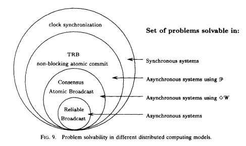
As you can see above, certain problems are not solvable without a failure detector in asynchronous systems. This is because without a failure detector (or strong assumptions about time bounds e.g. the synchronous system model), it is not possible to tell whether a remote node has crashed, or is simply experiencing high latency. That distinction is important for any system that aims for single-copy consistency: failed nodes can be ignored because they cannot cause divergence, but partitioned nodes cannot be safely ignored.
How can one implement a failure detector? Conceptually, there isn't much to a simple failure detector, which simply detects failure when a timeout expires. The most interesting part relates to how the judgments are made about whether a remote node has failed.
Ideally, we'd prefer the failure detector to be able to adjust to changing network conditions and to avoid hardcoding timeout values into it. For example, Cassandra uses an accrual failure detector, which is a failure detector that outputs a suspicion level (a value between 0 and 1) rather than a binary "up" or "down" judgment. This allows the application using the failure detector to make its own decisions about the tradeoff between accurate detection and early detection.
Time, order and performance
Earlier, I alluded to having to pay the cost for order. What did I mean?
If you're writing a distributed system, you presumably own more than one computer. The natural (and realistic) view of the world is a partial order, not a total order. You can transform a partial order into a total order, but this requires communication, waiting and imposes restrictions that limit how many computers can do work at any particular point in time.
All clocks are mere approximations bound by either network latency (logical time) or by physics. Even keeping a simple integer counter in sync across multiple nodes is a challenge.
While time and order are often discussed together, time itself is not such a useful property. Algorithms don't really care about time as much as they care about more abstract properties:
- the causal ordering of events
- failure detection (e.g. approximations of upper bounds on message delivery)
- consistent snapshots (e.g. the ability to examine the state of a system at some point in time; not discussed here)
Imposing a total order is possible, but expensive. It requires you to proceed at the common (lowest) speed. Often the easiest way to ensure that events are delivered in some defined order is to nominate a single (bottleneck) node through which all operations are passed.
Is time / order / synchronicity really necessary? It depends. In some use cases, we want each intermediate operation to move the system from one consistent state to another. For example, in many cases we want the responses from a database to represent all of the available information, and we want to avoid dealing with the issues that might occur if the system could return an inconsistent result.
But in other cases, we might not need that much time / order / synchronization. For example, if you are running a long running computation, and don't really care about what the system does until the very end - then you don't really need much synchronization as long as you can guarantee that the answer is correct.
Synchronization is often applied as a blunt tool across all operations, when only a subset of cases actually matter for the final outcome. When is order needed to guarantee correctness? The CALM theorem - which I will discuss in the last chapter - provides one answer.
In other cases, it is acceptable to give an answer that only represents the best known estimate - that is, is based on only a subset of the total information contained in the system. In particular, during a network partition one may need to answer queries with only a part of the system being accessible. In other use cases, the end user cannot really distinguish between a relatively recent answer that can be obtained cheaply and one that is guaranteed to be correct and is expensive to calculate. For example, is the Twitter follower count for some user X, or X+1? Or are movies A, B and C the absolutely best answers for some query? Doing a cheaper, mostly correct "best effort" can be acceptable.
In the next two chapters we'll examine replication for fault-tolerant strongly consistent systems - systems which provide strong guarantees while being increasingly resilient to failures. These systems provide solutions for the first case: when you need to guarantee correctness and are willing to pay for it. Then, we'll discuss systems with weak consistency guarantees, which can remain available in the face of partitions, but that can only give you a "best effort" answer.
Further reading
Lamport clocks, vector clocks
- Time, Clocks and Ordering of Events in a Distributed System - Leslie Lamport, 1978
Failure detection
- Unreliable failure detectors and reliable distributed systems - Chandra and Toueg
- Latency- and Bandwidth-Minimizing Optimal Failure Detectors - So & Sirer, 2007
- The failure detector abstraction, Freiling, Guerraoui & Kuznetsov, 2011
Snapshots
- Consistent global states of distributed systems: Fundamental concepts and mechanisms, Ozalp Babaogly and Keith Marzullo, 1993
- Distributed snapshots: Determining global states of distributed systems, K. Mani Chandy and Leslie Lamport, 1985
Causality
- Detecting Causal Relationships in Distributed Computations: In Search of the Holy Grail - Schwarz & Mattern, 1994
- Understanding the Limitations of Causally and Totally Ordered Communication - Cheriton & Skeen, 1993
4. Replication
The replication problem is one of many problems in distributed systems. I've chosen to focus on it over other problems such as leader election, failure detection, mutual exclusion, consensus and global snapshots because it is often the part that people are most interested in. One way in which parallel databases are differentiated is in terms of their replication features, for example. Furthermore, replication provides a context for many subproblems, such as leader election, failure detection, consensus and atomic broadcast.
Replication is a group communication problem. What arrangement and communication pattern gives us the performance and availability characteristics we desire? How can we ensure fault tolerance, durability and non-divergence in the face of network partitions and simultaneous node failure?
Again, there are many ways to approach replication. The approach I'll take here just looks at high level patterns that are possible for a system with replication. Looking at this visually helps keep the discussion focused on the overall pattern rather than the specific messaging involved. My goal here is to explore the design space rather than to explain the specifics of each algorithm.
Let's first define what replication looks like. We assume that we have some initial database, and that clients make requests which change the state of the database.
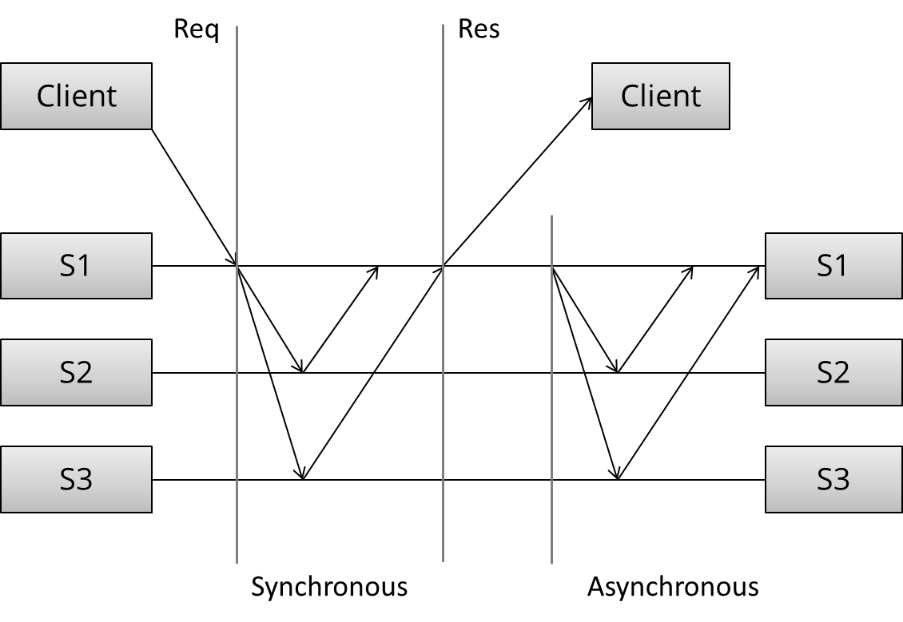
The arrangement and communication pattern can then be divided into several stages:
- (Request) The client sends a request to a server
- (Sync) The synchronous portion of the replication takes place
- (Response) A response is returned to the client
- (Async) The asynchronous portion of the replication takes place
This model is loosely based on this article. Note that the pattern of messages exchanged in each portion of the task depends on the specific algorithm: I am intentionally trying to get by without discussing the specific algorithm.
Given these stages, what kind of communication patterns can we create? And what are the performance and availability implications of the patterns we choose?
Synchronous replication
The first pattern is synchronous replication (also known as active, or eager, or push, or pessimistic replication). Let's draw what that looks like:
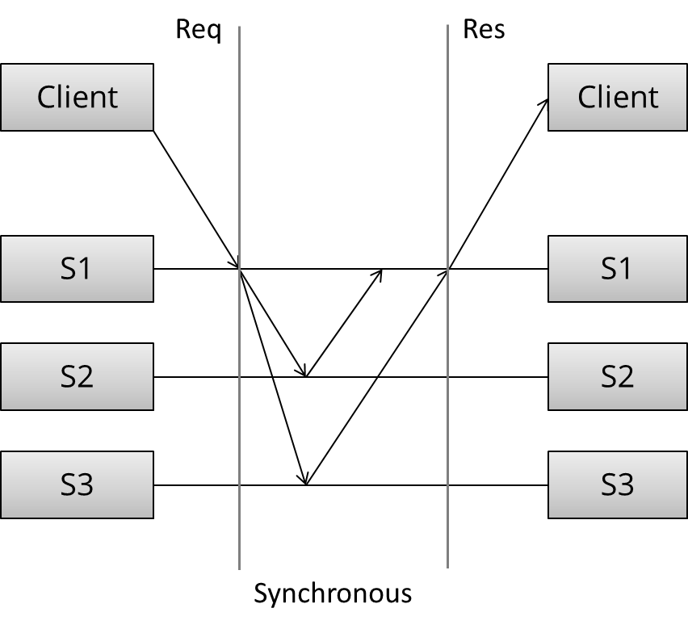
Here, we can see three distinct stages: first, the client sends the request. Next, what we called the synchronous portion of replication takes place. The term refers to the fact that the client is blocked - waiting for a reply from the system.
During the synchronous phase, the first server contacts the two other servers and waits until it has received replies from all the other servers. Finally, it sends a response to the client informing it of the result (e.g. success or failure).
All this seems straightforward. What can we say of this specific arrangement of communication patterns, without discussing the details of the algorithm during the synchronous phase? First, observe that this is a write N - of - N approach: before a response is returned, it has to be seen and acknowledged by every server in the system.
From a performance perspective, this means that the system will be as fast as the slowest server in it. The system will also be very sensitive to changes in network latency, since it requires every server to reply before proceeding.
Given the N-of-N approach, the system cannot tolerate the loss of any servers. When a server is lost, the system can no longer write to all the nodes, and so it cannot proceed. It might be able to provide read-only access to the data, but modifications are not allowed after a node has failed in this design.
This arrangement can provide very strong durability guarantees: the client can be certain that all N servers have received, stored and acknowledged the request when the response is returned. In order to lose an accepted update, all N copies would need to be lost, which is about as good a guarantee as you can make.
Asynchronous replication
Let's contrast this with the second pattern - asynchronous replication (a.k.a. passive replication, or pull replication, or lazy replication). As you may have guessed, this is the opposite of synchronous replication:
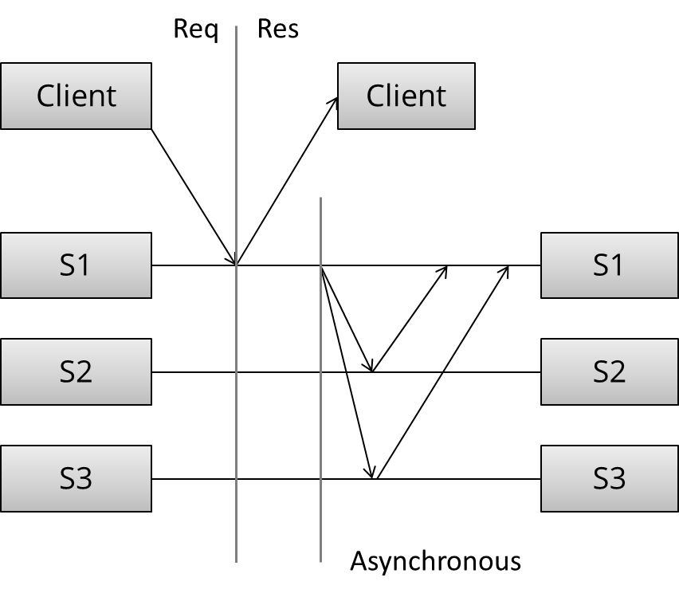
Here, the master (/leader / coordinator) immediately sends back a response to the client. It might at best store the update locally, but it will not do any significant work synchronously and the client is not forced to wait for more rounds of communication to occur between the servers.
At some later stage, the asynchronous portion of the replication task takes place. Here, the master contacts the other servers using some communication pattern, and the other servers update their copies of the data. The specifics depend on the algorithm in use.
What can we say of this specific arrangement without getting into the details of the algorithm? Well, this is a write 1 - of - N approach: a response is returned immediately and update propagation occurs sometime later.
From a performance perspective, this means that the system is fast: the client does not need to spend any additional time waiting for the internals of the system to do their work. The system is also more tolerant of network latency, since fluctuations in internal latency do not cause additional waiting on the client side.
This arrangement can only provide weak, or probabilistic durability guarantees. If nothing goes wrong, the data is eventually replicated to all N machines. However, if the only server containing the data is lost before this can take place, the data is permanently lost.
Given the 1-of-N approach, the system can remain available as long as at least one node is up (at least in theory, though in practice the load will probably be too high). A purely lazy approach like this provides no durability or consistency guarantees; you may be allowed to write to the system, but there are no guarantees that you can read back what you wrote if any faults occur.
Finally, it's worth noting that passive replication cannot ensure that all nodes in the system always contain the same state. If you accept writes at multiple locations and do not require that those nodes synchronously agree, then you will run the risk of divergence: reads may return different results from different locations (particularly after nodes fail and recover), and global constraints (which require communicating with everyone) cannot be enforced.
I haven't really mentioned the communication patterns during a read (rather than a write), because the pattern of reads really follows from the pattern of writes: during a read, you want to contact as few nodes as possible. We'll discuss this a bit more in the context of quorums.
We've only discussed two basic arrangements and none of the specific algorithms. Yet we've been able to figure out quite a bit of about the possible communication patterns as well as their performance, durability guarantees and availability characteristics.
An overview of major replication approaches
Having discussed the two basic replication approaches: synchronous and asynchronous replication, let's have a look at the major replication algorithms.
There are many, many different ways to categorize replication techniques. The second distinction (after sync vs. async) I'd like to introduce is between:
- Replication methods that prevent divergence (single copy systems) and
- Replication methods that risk divergence (multi-master systems)
The first group of methods has the property that they "behave like a single system". In particular, when partial failures occur, the system ensures that only a single copy of the system is active. Furthermore, the system ensures that the replicas are always in agreement. This is known as the consensus problem.
Several processes (or computers) achieve consensus if they all agree on some value. More formally:
- Agreement: Every correct process must agree on the same value.
- Integrity: Every correct process decides at most one value, and if it decides some value, then it must have been proposed by some process.
- Termination: All processes eventually reach a decision.
- Validity: If all correct processes propose the same value V, then all correct processes decide V.
Mutual exclusion, leader election, multicast and atomic broadcast are all instances of the more general problem of consensus. Replicated systems that maintain single copy consistency need to solve the consensus problem in some way.
The replication algorithms that maintain single-copy consistency include:
- 1n messages (asynchronous primary/backup)
- 2n messages (synchronous primary/backup)
- 4n messages (2-phase commit, Multi-Paxos)
- 6n messages (3-phase commit, Paxos with repeated leader election)
These algorithms vary in their fault tolerance (e.g. the types of faults they can tolerate). I've classified these simply by the number of messages exchanged during an execution of the algorithm, because I think it is interesting to try to find an answer to the question "what are we buying with the added message exchanges?"
The diagram below, adapted from Ryan Barret at Google, describes some of the aspects of the different options:
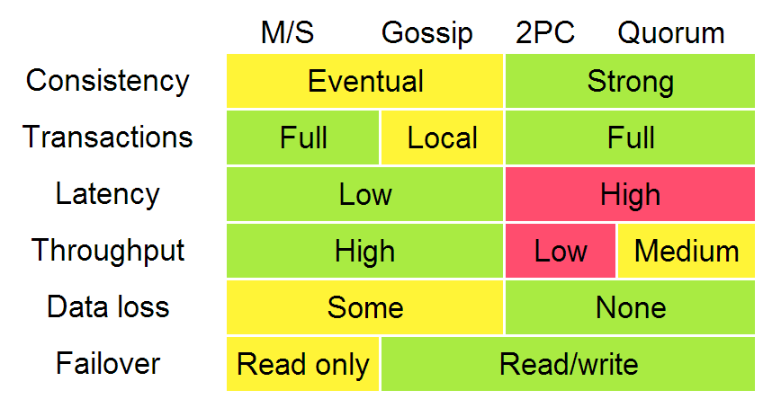
The consistency, latency, throughput, data loss and failover characteristics in the diagram above can really be traced back to the two different replication methods: synchronous replication (e.g. waiting before responding) and asynchronous replication. When you wait, you get worse performance but stronger guarantees. The throughput difference between 2PC and quorum systems will become apparent when we discuss partition (and latency) tolerance.
In that diagram, algorithms enforcing weak (/eventual) consistency are lumped up into one category ("gossip"). However, I will discuss replication methods for weak consistency - gossip and (partial) quorum systems - in more detail. The "transactions" row really refers more to global predicate evaluation, which is not supported in systems with weak consistency (though local predicate evaluation can be supported).
It is worth noting that systems enforcing weak consistency requirements have fewer generic algorithms, and more techniques that can be selectively applied. Since systems that do not enforce single-copy consistency are free to act like distributed systems consisting of multiple nodes, there are fewer obvious objectives to fix and the focus is more on giving people a way to reason about the characteristics of the system that they have.
For example:
- Client-centric consistency models attempt to provide more intelligible consistency guarantees while allowing for divergence.
- CRDTs (convergent and commutative replicated datatypes) exploit semilattice properties (associativity, commutativity, idempotency) of certain state and operation-based data types.
- Confluence analysis (as in the Bloom language) uses information regarding the monotonicity of computations to maximally exploit disorder.
- PBS (probabilistically bounded staleness) uses simulation and information collected from a real world system to characterize the expected behavior of partial quorum systems.
I'll talk about all of these a bit further on, first; let's look at the replication algorithms that maintain single-copy consistency.
Primary/backup replication
Primary/backup replication (also known as primary copy replication master-slave replication or log shipping) is perhaps the most commonly used replication method, and the most basic algorithm. All updated are performed on the primary, and a log of operations (or alternatively, changes) is shipped across the network to the backup replicas. There are two variants:
- asynchronous primary/backup replication and
- synchronous primary/backup replication
The synchronous version requires two messages ("update" + "acknowledge receipt") while the asynchronous version could run with just one ("update").
P/B is very common. For example, by default MySQL replication uses the asynchronous variant. MongoDB also uses P/B (with some additional procedures for failover). All operations are performed on one master server, which serializes them to a local log, which is then replicated asynchronously to the backup servers.
As we discussed earlier in the context of asynchronous replication, any asynchronous replication algorithm can only provide weak durability guarantees. In MySQL replication this manifests as replication lag: the asynchronous backups are always at least one operation behind the primary. If the primary fails, then the updates that have not yet been sent to the backups are lost.
The synchronous variant of primary/backup replication ensures that writes have been stored on other nodes before returning back to the client - at the cost of waiting for responses from other replicas. However, it is worth noting that even this variant can only offer weak guarantees. Consider the following simple failure scenario:
- the primary receives a write and sends it to the backup
- the backup persists and ACKs the write
- and then primary fails before sending ACK to the client
The client now assumes that the commit failed, but the backup committed it; if the backup is promoted to primary, it will be incorrect. Manual cleanup may be needed to reconcile the failed primary or divergent backups.
I am simplifying here of course. While all primary/backup replication algorithms follow the same general messaging pattern, they differ in their handling of failover, replicas being offline for extended periods and so on. However, it is not possible to be resilient to inopportune failures of the primary in this scheme.
What is key in the log-shipping / primary/backup based schemes is that they can only offer a best-effort guarantee (e.g. they are susceptible to lost updates or incorrect updates if nodes fail at inopportune times). Furthermore, P/B schemes are susceptible to split-brain, where the failover to a backup kicks in due to a temporary network issue and causes both the primary and backup to be active at the same time.
To prevent inopportune failures from causing consistency guarantees to be violated; we need to add another round of messaging, which gets us the two phase commit protocol (2PC).
Two phase commit (2PC)
Two phase commit (2PC) is a protocol used in many classic relational databases. For example, MySQL Cluster (not to be confused with the regular MySQL) provides synchronous replication using 2PC. The diagram below illustrates the message flow:
[ Coordinator ] -> OK to commit? [ Peers ]
<- Yes / No
[ Coordinator ] -> Commit / Rollback [ Peers ]
<- ACK
In the first phase (voting), the coordinator sends the update to all the participants. Each participant processes the update and votes whether to commit or abort. When voting to commit, the participants store the update onto a temporary area (the write-ahead log). Until the second phase completes, the update is considered temporary.
In the second phase (decision), the coordinator decides the outcome and informs every participant about it. If all participants voted to commit, then the update is taken from the temporary area and made permanent.
Having a second phase in place before the commit is considered permanent is useful, because it allows the system to roll back an update when a node fails. In contrast, in primary/backup ("1PC"), there is no step for rolling back an operation that has failed on some nodes and succeeded on others, and hence the replicas could diverge.
2PC is prone to blocking, since a single node failure (participant or coordinator) blocks progress until the node has recovered. Recovery is often possible thanks to the second phase, during which other nodes are informed about the system state. Note that 2PC assumes that the data in stable storage at each node is never lost and that no node crashes forever. Data loss is still possible if the data in the stable storage is corrupted in a crash.
The details of the recovery procedures during node failures are quite complicated so I won't get into the specifics. The major tasks are ensuring that writes to disk are durable (e.g. flushed to disk rather than cached) and making sure that the right recovery decisions are made (e.g. learning the outcome of the round and then redoing or undoing an update locally).
As we learned in the chapter regarding CAP, 2PC is a CA - it is not partition tolerant. The failure model that 2PC addresses does not include network partitions; the prescribed way to recover from a node failure is to wait until the network partition heals. There is no safe way to promote a new coordinator if one fails; rather a manual intervention is required. 2PC is also fairly latency-sensitive, since it is a write N-of-N approach in which writes cannot proceed until the slowest node acknowledges them.
2PC strikes a decent balance between performance and fault tolerance, which is why it has been popular in relational databases. However, newer systems often use a partition tolerant consensus algorithm, since such an algorithm can provide automatic recovery from temporary network partitions as well as more graceful handling of increased between-node latency.
Let's look at partition tolerant consensus algorithms next.
Partition tolerant consensus algorithms
Partition tolerant consensus algorithms are as far as we're going to go in terms of fault-tolerant algorithms that maintain single-copy consistency. There is a further class of fault tolerant algorithms: algorithms that tolerate arbitrary (Byzantine) faults; these include nodes that fail by acting maliciously. Such algorithms are rarely used in commercial systems, because they are more expensive to run and more complicated to implement - and hence I will leave them out.
When it comes to partition tolerant consensus algorithms, the most well-known algorithm is the Paxos algorithm. It is, however, notoriously difficult to implement and explain, so I will focus on Raft, a recent (~early 2013) algorithm designed to be easier to teach and implement. Let's first take a look at network partitions and the general characteristics of partition tolerant consensus algorithms.
What is a network partition?
A network partition is the failure of a network link to one or several nodes. The nodes themselves continue to stay active, and they may even be able to receive requests from clients on their side of the network partition. As we learned earlier - during the discussion of the CAP theorem - network partitions do occur and not all systems handle them gracefully.
Network partitions are tricky because during a network partition, it is not possible to distinguish between a failed remote node and the node being unreachable. If a network partition occurs but no nodes fail, then the system is divided into two partitions which are simultaneously active. The two diagrams below illustrate how a network partition can look similar to a node failure.
A system of 2 nodes, with a failure vs. a network partition:
A system of 3 nodes, with a failure vs. a network partition:
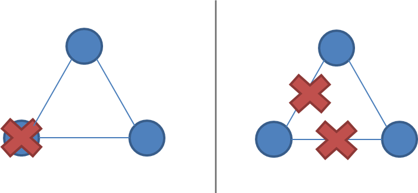
A system that enforces single-copy consistency must have some method to break symmetry: otherwise, it will split into two separate systems, which can diverge from each other and can no longer maintain the illusion of a single copy.
Network partition tolerance for systems that enforce single-copy consistency requires that during a network partition, only one partition of the system remains active since during a network partition it is not possible to prevent divergence (e.g. CAP theorem).
Majority decisions
This is why partition tolerant consensus algorithms rely on a majority vote. Requiring a majority of nodes - rather than all of the nodes (as in 2PC) - to agree on updates allows a minority of the nodes to be down, or slow, or unreachable due to a network partition. As long as (N/2 + 1)-of-N nodes are up and accessible, the system can continue to operate.
Partition tolerant consensus algorithms use an odd number of nodes (e.g. 3, 5 or 7). With just two nodes, it is not possible to have a clear majority after a failure. For example, if the number of nodes is three, then the system is resilient to one node failure; with five nodes the system is resilient to two node failures.
When a network partition occurs, the partitions behave asymmetrically. One partition will contain the majority of the nodes. Minority partitions will stop processing operations to prevent divergence during a network partition, but the majority partition can remain active. This ensures that only a single copy of the system state remains active.
Majorities are also useful because they can tolerate disagreement: if there is a perturbation or failure, the nodes may vote differently. However, since there can be only one majority decision, a temporary disagreement can at most block the protocol from proceeding (giving up liveness) but it cannot violate the single-copy consistency criterion (safety property).
Roles
There are two ways one might structure a system: all nodes may have the same responsibilities, or nodes may have separate, distinct roles.
Consensus algorithms for replication generally opt for having distinct roles for each node. Having a single fixed leader or master server is an optimization that makes the system more efficient, since we know that all updates must pass through that server. Nodes that are not the leader just need to forward their requests to the leader.
Note that having distinct roles does not preclude the system from recovering from the failure of the leader (or any other role). Just because roles are fixed during normal operation doesn't mean that one cannot recover from failure by reassigning the roles after a failure (e.g. via a leader election phase). Nodes can reuse the result of a leader election until node failures and/or network partitions occur.
Both Paxos and Raft make use of distinct node roles. In particular, they have a leader node ("proposer" in Paxos) that is responsible for coordination during normal operation. During normal operation, the rest of the nodes are followers ("acceptors" or "voters" in Paxos).
Epochs
Each period of normal operation in both Paxos and Raft is called an epoch ("term" in Raft). During each epoch only one node is the designated leader (a similar system is used in Japan where era names change upon imperial succession).
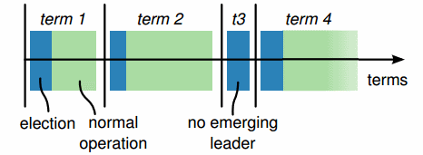
After a successful election, the same leader coordinates until the end of the epoch. As shown in the diagram above (from the Raft paper), some elections may fail, causing the epoch to end immediately.
Epochs act as a logical clock, allowing other nodes to identify when an outdated node starts communicating - nodes that were partitioned or out of operation will have a smaller epoch number than the current one, and their commands are ignored.
Leader changes via duels
During normal operation, a partition-tolerant consensus algorithm is rather simple. As we've seen earlier, if we didn't care about fault tolerance, we could just use 2PC. Most of the complexity really arises from ensuring that once a consensus decision has been made, it will not be lost and the protocol can handle leader changes as a result of a network or node failure.
All nodes start as followers; one node is elected to be a leader at the start. During normal operation, the leader maintains a heartbeat which allows the followers to detect if the leader fails or becomes partitioned.
When a node detects that a leader has become non-responsive (or, in the initial case, that no leader exists), it switches to an intermediate state (called "candidate" in Raft) where it increments the term/epoch value by one, initiates a leader election and competes to become the new leader.
In order to be elected a leader, a node must receive a majority of the votes. One way to assign votes is to simply assign them on a first-come-first-served basis; this way, a leader will eventually be elected. Adding a random amount of waiting time between attempts at getting elected will reduce the number of nodes that are simultaneously attempting to get elected.
Numbered proposals within an epoch
During each epoch, the leader proposes one value at a time to be voted upon. Within each epoch, each proposal is numbered with a unique strictly increasing number. The followers (voters / acceptors) accept the first proposal they receive for a particular proposal number.
Normal operation
During normal operation, all proposals go through the leader node. When a client submits a proposal (e.g. an update operation), the leader contacts all nodes in the quorum. If no competing proposals exist (based on the responses from the followers), the leader proposes the value. If a majority of the followers accept the value, then the value is considered to be accepted.
Since it is possible that another node is also attempting to act as a leader, we need to ensure that once a single proposal has been accepted, its value can never change. Otherwise a proposal that has already been accepted might for example be reverted by a competing leader. Lamport states this as:
P2: If a proposal with value
vis chosen, then every higher-numbered proposal that is chosen has valuev.
Ensuring that this property holds requires that both followers and proposers are constrained by the algorithm from ever changing a value that has been accepted by a majority. Note that "the value can never change" refers to the value of a single execution (or run / instance / decision) of the protocol. A typical replication algorithm will run multiple executions of the algorithm, but most discussions of the algorithm focus on a single run to keep things simple. We want to prevent the decision history from being altered or overwritten.
In order to enforce this property, the proposers must first ask the followers for their (highest numbered) accepted proposal and value. If the proposer finds out that a proposal already exists, then it must simply complete this execution of the protocol, rather than making its own proposal. Lamport states this as:
P2b. If a proposal with value
vis chosen, then every higher-numbered proposal issued by any proposer has valuev.
More specifically:
P2c. For any
vandn, if a proposal with valuevand numbernis issued [by a leader], then there is a setSconsisting of a majority of acceptors [followers] such that either (a) no acceptor inShas accepted any proposal numbered less thann, or (b)vis the value of the highest-numbered proposal among all proposals numbered less thannaccepted by the followers inS.
This is the core of the Paxos algorithm, as well as algorithms derived from it. The value to be proposed is not chosen until the second phase of the protocol. Proposers must sometimes simply retransmit a previously made decision to ensure safety (e.g. clause b in P2c) until they reach a point where they know that they are free to impose their own proposal value (e.g. clause a).
If multiple previous proposals exist, then the highest-numbered proposal value is proposed. Proposers may only attempt to impose their own value if there are no competing proposals at all.
To ensure that no competing proposals emerge between the time the proposer asks each acceptor about its most recent value, the proposer asks the followers not to accept proposals with lower proposal numbers than the current one.
Putting the pieces together, reaching a decision using Paxos requires two rounds of communication:
[ Proposer ] -> Prepare(n) [ Followers ]
<- Promise(n; previous proposal number
and previous value if accepted a
proposal in the past)
[ Proposer ] -> AcceptRequest(n, own value or the value [ Followers ]
associated with the highest proposal number
reported by the followers)
<- Accepted(n, value)
The prepare stage allows the proposer to learn of any competing or previous proposals. The second phase is where either a new value or a previously accepted value is proposed. In some cases - such as if two proposers are active at the same time (dueling); if messages are lost; or if a majority of the nodes have failed - then no proposal is accepted by a majority. But this is acceptable, since the decision rule for what value to propose converges towards a single value (the one with the highest proposal number in the previous attempt).
Indeed, according to the FLP impossibility result, this is the best we can do: algorithms that solve the consensus problem must either give up safety or liveness when the guarantees regarding bounds on message delivery do not hold. Paxos gives up liveness: it may have to delay decisions indefinitely until a point in time where there are no competing leaders, and a majority of nodes accept a proposal. This is preferable to violating the safety guarantees.
Of course, implementing this algorithm is much harder than it sounds. There are many small concerns which add up to a fairly significant amount of code even in the hands of experts. These are issues such as:
- practical optimizations:
- avoiding repeated leader election via leadership leases (rather than heartbeats)
- avoiding repeated propose messages when in a stable state where the leader identity does not change
- ensuring that followers and proposers do not lose items in stable storage and that results stored in stable storage are not subtly corrupted (e.g. disk corruption)
- enabling cluster membership to change in a safe manner (e.g. base Paxos depends on the fact that majorities always intersect in one node, which does not hold if the membership can change arbitrarily)
- procedures for bringing a new replica up to date in a safe and efficient manner after a crash, disk loss or when a new node is provisioned
- procedures for snapshotting and garbage collecting the data required to guarantee safety after some reasonable period (e.g. balancing storage requirements and fault tolerance requirements)
Google's Paxos Made Live paper details some of these challenges.
Partition-tolerant consensus algorithms: Paxos, Raft, ZAB
Hopefully, this has given you a sense of how a partition-tolerant consensus algorithm works. I encourage you to read one of the papers in the further reading section to get a grasp of the specifics of the different algorithms.
Paxos. Paxos is one of the most important algorithms when writing strongly consistent partition tolerant replicated systems. It is used in many of Google's systems, including the Chubby lock manager used by BigTable/Megastore, the Google File System as well as Spanner.
Paxos is named after the Greek island of Paxos, and was originally presented by Leslie Lamport in a paper called "The Part-Time Parliament" in 1998. It is often considered to be difficult to implement, and there have been a series of papers from companies with considerable distributed systems expertise explaining further practical details (see the further reading). You might want to read Lamport's commentary on this issue here and here.
The issues mostly relate to the fact that Paxos is described in terms of a single round of consensus decision making, but an actual working implementation usually wants to run multiple rounds of consensus efficiently. This has led to the development of many extensions on the core protocol that anyone interested in building a Paxos-based system still needs to digest. Furthermore, there are additional practical challenges such as how to facilitate cluster membership change.
ZAB. ZAB - the Zookeeper Atomic Broadcast protocol is used in Apache Zookeeper. Zookeeper is a system which provides coordination primitives for distributed systems, and is used by many Hadoop-centric distributed systems for coordination (e.g. HBase, Storm, Kafka). Zookeeper is basically the open source community's version of Chubby. Technically speaking atomic broadcast is a problem different from pure consensus, but it still falls under the category of partition tolerant algorithms that ensure strong consistency.
Raft. Raft is a recent (2013) addition to this family of algorithms. It is designed to be easier to teach than Paxos, while providing the same guarantees. In particular, the different parts of the algorithm are more clearly separated and the paper also describes a mechanism for cluster membership change. It has recently seen adoption in etcd inspired by ZooKeeper.
Replication methods with strong consistency
In this chapter, we took a look at replication methods that enforce strong consistency. Starting with a contrast between synchronous work and asynchronous work, we worked our way up to algorithms that are tolerant of increasingly complex failures. Here are some of the key characteristics of each of the algorithms:
Primary/Backup
- Single, static master
- Replicated log, slaves are not involved in executing operations
- No bounds on replication delay
- Not partition tolerant
- Manual/ad-hoc failover, not fault tolerant, "hot backup"
2PC
- Unanimous vote: commit or abort
- Static master
- 2PC cannot survive simultaneous failure of the coordinator and a node during a commit
- Not partition tolerant, tail latency sensitive
Paxos
- Majority vote
- Dynamic master
- Robust to n/2-1 simultaneous failures as part of protocol
- Less sensitive to tail latency
Further reading
Primary-backup and 2PC
- Replication techniques for availability - Robbert van Renesse & Rachid Guerraoui, 2010
- Concurrency Control and Recovery in Database Systems
Paxos
- The Part-Time Parliament - Leslie Lamport
- Paxos Made Simple - Leslie Lamport, 2001
- Paxos Made Live - An Engineering Perspective - Chandra et al
- Paxos Made Practical - Mazieres, 2007
- Revisiting the Paxos Algorithm - Lynch et al
- How to build a highly available system with consensus - Butler Lampson
- Reconfiguring a State Machine - Lamport et al - changing cluster membership
- Implementing Fault-Tolerant Services Using the State Machine Approach: a Tutorial - Fred Schneider
Raft and ZAB
- In Search of an Understandable Consensus Algorithm, Diego Ongaro, John Ousterhout, 2013
- Raft Lecture - User Study
- A simple totally ordered broadcast protocol - Junqueira, Reed
- ZooKeeper Atomic Broadcast
5. Replication: weak consistency model protocols
Now that we've taken a look at protocols that can enforce single-copy consistency under an increasingly realistic set of supported failure cases, let's turn our attention at the world of options that opens up once we let go of the requirement of single-copy consistency.
By and large, it is hard to come up with a single dimension that defines or characterizes the protocols that allow for replicas to diverge. Most such protocols are highly available, and the key issue is more whether or not the end users find the guarantees, abstractions and APIs useful for their purpose in spite of the fact that the replicas may diverge when node and/or network failures occur.
Why haven't weakly consistent systems been more popular?
As I stated in the introduction, I think that much of distributed programming is about dealing with the implications of two consequences of distribution:
- that information travels at the speed of light
- that independent things fail independently
The implication that follows from the limitation on the speed at which information travels is that nodes experience the world in different, unique ways. Computation on a single node is easy, because everything happens in a predictable global total order. Computation on a distributed system is difficult, because there is no global total order.
For the longest while (e.g. decades of research), we've solved this problem by introducing a global total order. I've discussed the many methods for achieving strong consistency by creating order (in a fault-tolerant manner) where there is no naturally occurring total order.
Of course, the problem is that enforcing order is expensive. This breaks down in particular with large scale internet systems, where a system needs to remain available. A system enforcing strong consistency doesn't behave like a distributed system: it behaves like a single system, which is bad for availability during a partition.
Furthermore, for each operation, often a majority of the nodes must be contacted - and often not just once, but twice (as you saw in the discussion on 2PC). This is particularly painful in systems that need to be geographically distributed to provide adequate performance for a global user base.
So behaving like a single system by default is perhaps not desirable.
Perhaps what we want is a system where we can write code that doesn't use expensive coordination, and yet returns a "usable" value. Instead of having a single truth, we will allow different replicas to diverge from each other - both to keep things efficient but also to tolerate partitions - and then try to find a way to deal with the divergence in some manner.
Eventual consistency expresses this idea: that nodes can for some time diverge from each other, but that eventually they will agree on the value.
Within the set of systems providing eventual consistency, there are two types of system designs:
Eventual consistency with probabilistic guarantees. This type of system can detect conflicting writes at some later point, but does not guarantee that the results are equivalent to some correct sequential execution. In other words, conflicting updates will sometimes result in overwriting a newer value with an older one and some anomalies can be expected to occur during normal operation (or during partitions).
In recent years, the most influential system design offering single-copy consistency is Amazon's Dynamo, which I will discuss as an example of a system that offers eventual consistency with probabilistic guarantees.
Eventual consistency with strong guarantees. This type of system guarantees that the results converge to a common value equivalent to some correct sequential execution. In other words, such systems do not produce in anomalous results; without any coordination you can build replicas of the same service, and those replicas can communicate in any pattern and receive the updates in any order, and they will eventually agree on the end result as long as they all see the same information.
CRDT's (convergent replicated data types) are data types that guarantee convergence to the same value in spite of network delays, partitions and message reordering. They are provably convergent, but the data types that can be implemented as CRDT's are limited.
The CALM (consistency as logical monotonicity) conjecture is an alternative expression of the same principle: it equates logical monotonicity with convergence. If we can conclude that something is logically monotonic, then it is also safe to run without coordination. Confluence analysis - in particular, as applied for the Bloom programming language - can be used to guide programmer decisions about when and where to use the coordination techniques from strongly consistent systems and when it is safe to execute without coordination.
Reconciling different operation orders
What does a system that does not enforce single-copy consistency look like? Let's try to make this more concrete by looking a few examples.
Perhaps the most obvious characteristic of systems that do not enforce single-copy consistency is that they allow replicas to diverge from each other. This means that there is no strictly defined pattern of communication: replicas can be separated from each other and yet continue to be available and accept writes.
Let's imagine a system of three replicas, each of which is partitioned from the others. For example, the replicas might be in different datacenters and for some reason unable to communicate. Each replica remains available during the partition, accepting both reads and writes from some set of clients:
[Clients] - > [A] --- Partition --- [Clients] - > [B] --- Partition --- [Clients] - > [C]
After some time, the partitions heal and the replica servers exchange information. They have received different updates from different clients and have diverged each other, so some sort of reconciliation needs to take place. What we would like to happen is that all of the replicas converge to the same result.
[A] \
--> [merge]
[B] / |
|
[C] ----[merge]---> result
Another way to think about systems with weak consistency guarantees is to imagine a set of clients sending messages to two in some order. Because there is no coordination protocol that enforces a single total order, the messages can get delivered in different orders at the two replicas:
[Clients] --> [A] 1, 2, 3 [Clients] --> [B] 2, 3, 1
This is, in essence, the reason why we need coordination protocols. For example, assume that we are trying to concatenate a string and the operations in messages 1, 2 and 3 are:
1: { operation: concat('Hello ') }
2: { operation: concat('World') }
3: { operation: concat('!') }
Then, without coordination, A will produce "Hello World!", and B will produce "World!Hello ".
A: concat(concat(concat('', 'Hello '), 'World'), '!') = 'Hello World!'
B: concat(concat(concat('', 'World'), '!'), 'Hello ') = 'World!Hello '
This is, of course, incorrect. Again, what we'd like to happen is that the replicas converge to the same result.
Keeping these two examples in mind, let's look at Amazon's Dynamo first to establish a baseline, and then discuss a number of novel approaches to building systems with weak consistency guarantees, such as CRDT's and the CALM theorem.
Amazon's Dynamo
Amazon's Dynamo system design (2007) is probably the best-known system that offers weak consistency guarantees but high availability. It is the basis for many other real world systems, including LinkedIn's Voldemort, Facebook's Cassandra and Basho's Riak.
Dynamo is an eventually consistent, highly available key-value store. A key value store is like a large hash table: a client can set values via set(key, value) and retrieve them by key using get(key). A Dynamo cluster consists of N peer nodes; each node has a set of keys which is it responsible for storing.
Dynamo prioritizes availability over consistency; it does not guarantee single-copy consistency. Instead, replicas may diverge from each other when values are written; when a key is read, there is a read reconciliation phase that attempts to reconcile differences between replicas before returning the value back to the client.
For many features on Amazon, it is more important to avoid outages than it is to ensure that data is perfectly consistent, as an outage can lead to lost business and a loss of credibility. Furthermore, if the data is not particularly important, then a weakly consistent system can provide better performance and higher availability at a lower cost than a traditional RDBMS.
Since Dynamo is a complete system design, there are many different parts to look at beyond the core replication task. The diagram below illustrates some of the tasks; notably, how a write is routed to a node and written to multiple replicas.
[ Client ]
|
( Mapping keys to nodes )
|
V
[ Node A ]
| \
( Synchronous replication task: minimum durability )
| \
[ Node B] [ Node C ]
A
|
( Conflict detection; asynchronous replication task:
ensuring that partitioned / recovered nodes recover )
|
V
[ Node D]
After looking at how a write is initially accepted, we'll look at how conflicts are detected, as well as the asynchronous replica synchronization task. This task is needed because of the high availability design, in which nodes may be temporarily unavailable (down or partitioned). The replica synchronization task ensures that nodes can catch up fairly rapidly even after a failure.
Consistent hashing
Whether we are reading or writing, the first thing that needs to happen is that we need to locate where the data should live on the system. This requires some type of key-to-node mapping.
In Dynamo, keys are mapped to nodes using a hashing technique known as consistent hashing (which I will not discuss in detail). The main idea is that a key can be mapped to a set of nodes responsible for it by a simple calculation on the client. This means that a client can locate keys without having to query the system for the location of each key; this saves system resources as hashing is generally faster than performing a remote procedure call.
Partial quorums
Once we know where a key should be stored, we need to do some work to persist the value. This is a synchronous task; the reason why we will immediately write the value onto multiple nodes is to provide a higher level of durability (e.g. protection from the immediate failure of a node).
Just like Paxos or Raft, Dynamo uses quorums for replication. However, Dynamo's quorums are sloppy (partial) quorums rather than strict (majority) quorums.
Informally, a strict quorum system is a quorum system with the property that any two quorums (sets) in the quorum system overlap. Requiring a majority to vote for an update before accepting it guarantees that only a single history is admitted since each majority quorum must overlap in at least one node. This was the property that Paxos, for example, relied on.
Partial quorums do not have that property; what this means is that a majority is not required and that different subsets of the quorum may contain different versions of the same data. The user can choose the number of nodes to write to and read from:
- the user can choose some number W-of-N nodes required for a write to succeed; and
- the user can specify the number of nodes (R-of-N) to be contacted during a read.
W and R specify the number of nodes that need to be involved to a write or a read. Writing to more nodes makes writes slightly slower but increases the probability that the value is not lost; reading from more nodes increases the probability that the value read is up to date.
The usual recommendation is that R + W > N, because this means that the read and write quorums overlap in one node - making it less likely that a stale value is returned. A typical configuration is N = 3 (e.g. a total of three replicas for each value); this means that the user can choose between:
R = 1, W = 3; R = 2, W = 2 or R = 3, W = 1
More generally, again assuming R + W > N:
R = 1,W = N: fast reads, slow writesR = N,W = 1: fast writes, slow readsR = N/2andW = N/2 + 1: favorable to both
N is rarely more than 3, because keeping that many copies of large amounts of data around gets expensive!
As I mentioned earlier, the Dynamo paper has inspired many other similar designs. They all use the same partial quorum based replication approach, but with different defaults for N, W and R:
- Basho's Riak (N = 3, R = 2, W = 2 default)
- Linkedin's Voldemort (N = 2 or 3, R = 1, W = 1 default)
- Apache's Cassandra (N = 3, R = 1, W = 1 default)
There is another detail: when sending a read or write request, are all N nodes asked to respond (Riak), or only a number of nodes that meets the minimum (e.g. R or W; Voldemort). The "send-to-all" approach is faster and less sensitive to latency (since it only waits for the fastest R or W nodes of N) but also less efficient, while the "send-to-minimum" approach is more sensitive to latency (since latency communicating with a single node will delay the operation) but also more efficient (fewer messages / connections overall).
What happens when the read and write quorums overlap, e.g. (R + W > N)? Specifically, it is often claimed that this results in "strong consistency".
Is R + W > N the same as "strong consistency"?
No.
It's not completely off base: a system where R + W > N can detect read/write conflicts, since any read quorum and any write quorum share a member. E.g. at least one node is in both quorums:
1 2 N/2+1 N/2+2 N [...] [R] [R + W] [W] [...]
This guarantees that a previous write will be seen by a subsequent read. However, this only holds if the nodes in N never change. Hence, Dynamo doesn't qualify, because in Dynamo the cluster membership can change if nodes fail.
Dynamo is designed to be always writable. It has a mechanism which handles node failures by adding a different, unrelated server into the set of nodes responsible for certain keys when the original server is down. This means that the quorums are no longer guaranteed to always overlap. Even R = W = N would not qualify, since while the quorum sizes are equal to N, the nodes in those quorums can change during a failure. Concretely, during a partition, if a sufficient number of nodes cannot be reached, Dynamo will add new nodes to the quorum from unrelated but accessible nodes.
Furthermore, Dynamo doesn't handle partitions in the manner that a system enforcing a strong consistency model would: namely, writes are allowed on both sides of a partition, which means that for at least some time the system does not act as a single copy. So calling R + W > N "strongly consistent" is misleading; the guarantees merely probabilistic - which is not what strong consistency refers to.
Conflict detection and read repair
Systems that allow replicas to diverge must have a way to eventually reconcile two different values. As briefly mentioned during the partial quorum approach, one way to do this is to detect conflicts at read time, and then apply some conflict resolution method. But how is this done?
In general, this is done by tracking the causal history of a piece of data by supplementing it with some metadata. Clients must keep the metadata information when they read data from the system, and must return back the metadata value when writing to the database.
We've already encountered a method for doing this: vector clocks can be used to represent the history of a value. Indeed, this is what the original Dynamo design uses for detecting conflicts.
However, using vector clocks is not the only alternative. If you look at many practical system designs, you can deduce quite a bit about how they work by looking at the metadata that they track.
No metadata. When a system does not track metadata, and only returns the value (e.g. via a client API), it cannot really do anything special about concurrent writes. A common rule is that the last writer wins: in other words, if two writers are writing at the same time, only the value from the slowest writer is kept around.
Timestamps. Nominally, the value with the higher timestamp value wins. However, if time is not carefully synchronized, many odd things can happen where old data from a system with a faulty or fast clock overwrites newer values. Facebook's Cassandra is a Dynamo variant that uses timestamps instead of vector clocks.
Version numbers. Version numbers may avoid some of the issues related with using timestamps. Note that the smallest mechanism that can accurately track causality when multiple histories are possible are vector clocks, not version numbers.
Vector clocks. Using vector clocks, concurrent and out of date updates can be detected. Performing read repair then becomes possible, though in some cases (concurrent changes) we need to ask the client to pick a value. This is because if the changes are concurrent and we know nothing more about the data (as is the case with a simple key-value store), then it is better to ask than to discard data arbitrarily.
When reading a value, the client contacts R of N nodes and asks them for the latest value for a key. It takes all the responses, discards the values that are strictly older (using the vector clock value to detect this). If there is only one unique vector clock + value pair, it returns that. If there are multiple vector clock + value pairs that have been edited concurrently (e.g. are not comparable), then all of those values are returned.
As is obvious from the above, read repair may return multiple values. This means that the client / application developer must occasionally handle these cases by picking a value based on some use-case specific criterion.
In addition, a key component of a practical vector clock system is that the clocks cannot be allowed to grow forever - so there needs to be a procedure for occasionally garbage collecting the clocks in a safe manner to balance fault tolerance with storage requirements.
Replica synchronization: gossip and Merkle trees
Given that the Dynamo system design is tolerant of node failures and network partitions, it needs a way to deal with nodes rejoining the cluster after being partitioned, or when a failed node is replaced or partially recovered.
Replica synchronization is used to bring nodes up to date after a failure, and for periodically synchronizing replicas with each other.
Gossip is a probabilistic technique for synchronizing replicas. The pattern of communication (e.g. which node contacts which node) is not determined in advance. Instead, nodes have some probability p of attempting to synchronize with each other. Every t seconds, each node picks a node to communicate with. This provides an additional mechanism beyond the synchronous task (e.g. the partial quorum writes) which brings the replicas up to date.
Gossip is scalable, and has no single point of failure, but can only provide probabilistic guarantees.
In order to make the information exchange during replica synchronization efficient, Dynamo uses a technique called Merkle trees, which I will not cover in detail. The key idea is that a data store can be hashed at multiple different level of granularity: a hash representing the whole content, half the keys, a quarter of the keys and so on.
By maintaining this fairly granular hashing, nodes can compare their data store content much more efficiently than a naive technique. Once the nodes have identified which keys have different values, they exchange the necessary information to bring the replicas up to date.
Dynamo in practice: probabilistically bounded staleness (PBS)
And that pretty much covers the Dynamo system design:
- consistent hashing to determine key placement
- partial quorums for reading and writing
- conflict detection and read repair via vector clocks and
- gossip for replica synchronization
How might we characterize the behavior of such a system? A fairly recent paper from Bailis et al. (2012) describes an approach called PBS (probabilistically bounded staleness) uses simulation and data collected from a real world system to characterize the expected behavior of such a system.
PBS estimates the degree of inconsistency by using information about the anti-entropy (gossip) rate, the network latency and local processing delay to estimate the expected level of consistency of reads. It has been implemented in Cassandra, where timing information is piggybacked on other messages and an estimate is calculated based on a sample of this information in a Monte Carlo simulation.
Based on the paper, during normal operation eventually consistent data stores are often faster and can read a consistent state within tens or hundreds of milliseconds. The table below illustrates amount of time required from a 99.9% probability of consistent reads given different R and W settings on empirical timing data from LinkedIn (SSD and 15k RPM disks) and Yammer:
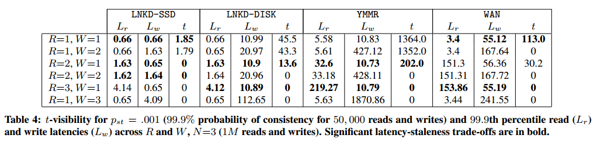
For example, going from R=1, W=1 to R=2, W=1 in the Yammer case reduces the inconsistency window from 1352 ms to 202 ms - while keeping the read latencies lower (32.6 ms) than the fastest strict quorum (R=3, W=1; 219.27 ms).
For more details, have a look at the PBS website and the associated paper.
Disorderly programming
Let's look back at the examples of the kinds of situations that we'd like to resolve. The first scenario consisted of three different servers behind partitions; after the partitions healed, we wanted the servers to converge to the same value. Amazon's Dynamo made this possible by reading from R out of N nodes and then performing read reconciliation.
In the second example, we considered a more specific operation: string concatenation. It turns out that there is no known technique for making string concatenation resolve to the same value without imposing an order on the operations (e.g. without expensive coordination). However, there are operations which can be applied safely in any order, where a simple register would not be able to do so. As Pat Helland wrote:
... operation-centric work can be made commutative (with the right operations and the right semantics) where a simple READ/WRITE semantic does not lend itself to commutativity.
For example, consider a system that implements a simple accounting system with the debit and credit operations in two different ways:
- using a register with
readandwriteoperations, and - using a integer data type with native
debitandcreditoperations
The latter implementation knows more about the internals of the data type, and so it can preserve the intent of the operations in spite of the operations being reordered. Debiting or crediting can be applied in any order, and the end result is the same:
100 + credit(10) + credit(20) = 130 and 100 + credit(20) + credit(10) = 130
However, writing a fixed value cannot be done in any order: if writes are reordered, the one of the writes will overwrite the other:
100 + write(110) + write(130) = 130 but 100 + write(130) + write(110) = 110
Let's take the example from the beginning of this chapter, but use a different operation. In this scenario, clients are sending messages to two nodes, which see the operations in different orders:
[Clients] --> [A] 1, 2, 3 [Clients] --> [B] 2, 3, 1
Instead of string concatenation, assume that we are looking to find the largest value (e.g. MAX()) for a set of integers. The messages 1, 2 and 3 are:
1: { operation: max(previous, 3) }
2: { operation: max(previous, 5) }
3: { operation: max(previous, 7) }
Then, without coordination, both A and B will converge to 7, e.g.:
A: max(max(max(0, 3), 5), 7) = 7 B: max(max(max(0, 5), 7), 3) = 7
In both cases, two replicas see updates in different order, but we are able to merge the results in a way that has the same result in spite of what the order is. The result converges to the same answer in both cases because of the merge procedure (max) we used.
It is likely not possible to write a merge procedure that works for all data types. In Dynamo, a value is a binary blob, so the best that can be done is to expose it and ask the application to handle each conflict.
However, if we know that the data is of a more specific type, handling these kinds of conflicts becomes possible. CRDT's are data structures designed to provide data types that will always converge, as long as they see the same set of operations (in any order).
CRDTs: Convergent replicated data types
CRDTs (convergent replicated datatypes) exploit knowledge regarding the commutativity and associativity of specific operations on specific datatypes.
In order for a set of operations to converge on the same value in an environment where replicas only communicate occasionally, the operations need to be order-independent and insensitive to (message) duplication/redelivery. Thus, their operations need to be:
- Associative (
a+(b+c)=(a+b)+c), so that grouping doesn't matter - Commutative (
a+b=b+a), so that order of application doesn't matter - Idempotent (
a+a=a), so that duplication does not matter
It turns out that these structures are already known in mathematics; they are known as join or meet semilattices.
A lattice is a partially ordered set with a distinct top (least upper bound) and a distinct bottom (greatest lower bound). A semilattice is like a lattice, but one that only has a distinct top or bottom. A join semilattice is one with a distinct top (least upper bound) and a meet semilattice is one with a distinct bottom (greatest lower bound).
Any data type that be expressed as a semilattice can be implemented as a data structure which guarantees convergence. For example, calculating the max() of a set of values will always return the same result regardless of the order in which the values were received, as long as all values are eventually received, because the max() operation is associative, commutative and idempotent.
For example, here are two lattices: one drawn for a set, where the merge operator is union(items) and one drawn for a strictly increasing integer counter, where the merge operator is max(values):
{ a, b, c } 7
/ | \ / \
{a, b} {b,c} {a,c} 5 7
| \ / | / / | \
{a} {b} {c} 3 5 7
With data types that can be expressed as semilattices, you can have replicas communicate in any pattern and receive the updates in any order, and they will eventually agree on the end result as long as they all see the same information. That is a powerful property that can be guaranteed as long as the prerequisites hold.
However, expressing a data type as a semilattice often requires some level of interpretation. Many data types have operations which are not in fact order-independent. For example, adding items to a set is associative, commutative and idempotent. However, if we also allow items to be removed from a set, then we need some way to resolve conflicting operations, such as add(A) and remove(A). What does it mean to remove an element if the local replica never added it? This resolution has to be specified in a manner that is order-independent, and there are several different choices with different tradeoffs.
This means that several familiar data types have more specialized implementations as CRDT's which make a different tradeoff in order to resolve conflicts in an order-independent manner. Unlike a key-value store which simply deals with registers (e.g. values that are opaque blobs from the perspective of the system), someone using CRDTs must use the right data type to avoid anomalies.
Some examples of the different data types specified as CRDT's include:
- Counters
- Grow-only counter (merge = max(values); payload = single integer)
- Positive-negative counter (consists of two grow counters, one for increments and another for decrements)
- Registers
- Last Write Wins -register (timestamps or version numbers; merge = max(ts); payload = blob)
- Multi-valued -register (vector clocks; merge = take both)
- Sets
- Grow-only set (merge = union(items); payload = set; no removal)
- Two-phase set (consists of two sets, one for adding, and another for removing; elements can be added once and removed once)
- Unique set (an optimized version of the two-phase set)
- Last write wins set (merge = max(ts); payload = set)
- Positive-negative set (consists of one PN-counter per set item)
- Observed-remove set
- Graphs and text sequences (see the paper)
To ensure anomaly-free operation, you need to find the right data type for your specific application - for example, if you know that you will only remove an item once, then a two-phase set works; if you will only ever add items to a set and never remove them, then a grow-only set works.
Not all data structures have known implementations as CRDTs, but there are CRDT implementations for booleans, counters, sets, registers and graphs in the recent (2011) survey paper from Shapiro et al.
Interestingly, the register implementations correspond directly with the implementations that key value stores use: a last-write-wins register uses timestamps or some equivalent and simply converges to the largest timestamp value; a multi-valued register corresponds to the Dynamo strategy of retaining, exposing and reconciling concurrent changes. For the details, I recommend that you take a look at the papers in the further reading section of this chapter.
The CALM theorem
The CRDT data structures were based on the recognition that data structures expressible as semilattices are convergent. But programming is about more than just evolving state, unless you are just implementing a data store.
Clearly, order-independence is an important property of any computation that converges: if the order in which data items are received influences the result of the computation, then there is no way to execute a computation without guaranteeing order.
However, there are many programming models in which the order of statements does not play a significant role. For example, in the MapReduce model, both the Map and the Reduce tasks are specified as stateless tuple-processing tasks that need to be run on a dataset. Concrete decisions about how and in what order data is routed to the tasks is not specified explicitly, instead, the batch job scheduler is responsible for scheduling the tasks to run on the cluster.
Similarly, in SQL one specifies the query, but not how the query is executed. The query is simply a declarative description of the task, and it is the job of the query optimizer to figure out an efficient way to execute the query (across multiple machines, databases and tables).
Of course, these programming models are not as permissive as a general purpose programming language. MapReduce tasks need to be expressible as stateless tasks in an acyclic dataflow program; SQL statements can execute fairly sophisticated computations but many things are hard to express in it.
However, it should be clear from these two examples that there are many kinds of data processing tasks which are amenable to being expressed in a declarative language where the order of execution is not explicitly specified. Programming models which express a desired result while leaving the exact order of statements up to an optimizer to decide often have semantics that are order-independent. This means that such programs may be possible to execute without coordination, since they depend on the inputs they receive but not necessarily the specific order in which the inputs are received.
The key point is that such programs may be safe to execute without coordination. Without a clear rule that characterizes what is safe to execute without coordination, and what is not, we cannot implement a program while remaining certain that the result is correct.
This is what the CALM theorem is about. The CALM theorem is based on a recognition of the link between logical monotonicity and useful forms of eventual consistency (e.g. confluence / convergence). It states that logically monotonic programs are guaranteed to be eventually consistent.
Then, if we know that some computation is logically monotonic, then we know that it is also safe to execute without coordination.
To better understand this, we need to contrast monotonic logic (or monotonic computations) with non-monotonic logic (or non-monotonic computations).
- Monotony
- if sentence
φis a consequence of a set of premisesΓ, then it can also be inferred from any setΔof premises extendingΓ
Most standard logical frameworks are monotonic: any inferences made within a framework such as first-order logic, once deductively valid, cannot be invalidated by new information. A non-monotonic logic is a system in which that property does not hold - in other words, if some conclusions can be invalidated by learning new knowledge.
Within the artificial intelligence community, non-monotonic logics are associated with defeasible reasoning - reasoning, in which assertions made utilizing partial information can be invalidated by new knowledge. For example, if we learn that Tweety is a bird, we'll assume that Tweety can fly; but if we later learn that Tweety is a penguin, then we'll have to revise our conclusion.
Monotonicity concerns the relationship between premises (or facts about the world) and conclusions (or assertions about the world). Within a monotonic logic, we know that our results are retraction-free: monotone computations do not need to be recomputed or coordinated; the answer gets more accurate over time. Once we know that Tweety is a bird (and that we're reasoning using monotonic logic), we can safely conclude that Tweety can fly and that nothing we learn can invalidate that conclusion.
While any computation that produces a human-facing result can be interpreted as an assertion about the world (e.g. the value of "foo" is "bar"), determining whether a computation in a von Neumann -machine based programming model is monotonic difficult because it is not exactly clear what the relationship between facts and assertions are and whether those relationships are monotonic.
However, there are a number of programming models for which determining monotonicity is possible. In particular, relational algebra (e.g. the theoretical underpinnings of SQL) and Datalog provide highly expressive languages that have well-understood interpretations.
Both basic Datalog and relational algebra (even with recursion) are known to be monotonic. More specifically, computations expressed using a certain set of basic operators are known to be monotonic (selection, projection, natural join, cross product, union and recursive Datalog without negation), and non-monotonicity is introduced by using more advanced operators (negation, set difference, division, universal quantification, aggregation).
This means that computations expressed using a significant number of operators (e.g. map, filter, join, union, intersection) in those systems are logically monotonic; any computations using those operators are also monotonic and thus safe to run without coordination. Expressions that make use of negation and aggregation, on the other hand, are not safe to run without coordination.
It is important to realize the connection between non-monotonicity and operations that are expensive to perform in a distributed system. Specifically, both distributed aggregation and coordination protocols can be considered to be a form of negation. As Joe Hellerstein writes:
To establish the veracity of a negated predicate in a distributed setting, an evaluation strategy has to start "counting to 0" to determine emptiness, and wait until the distributed counting process has definitely terminated. Aggregation is the generalization of this idea.
and:
This idea can be seen from the other direction as well. Coordination protocols are themselves aggregations, since they entail voting: Two-Phase Commit requires unanimous votes, Paxos consensus requires majority votes, and Byzantine protocols require a 2/3 majority. Waiting requires counting.
If, then we can express our computation in a manner in which it is possible to test for monotonicity, then we can perform a whole-program static analysis that detects which parts of the program are eventually consistent and safe to run without coordination (the monotonic parts) - and which parts are not (the non-monotonic ones).
Note that this requires a different kind of language, since these inferences are hard to make for traditional programming languages where sequence, selection and iteration are at the core. Which is why the Bloom language was designed.
What is non-mononicity good for?
The difference between monotonicity and non-monotonicity is interesting. For example, adding two numbers is monotonic, but calculating an aggregation over two nodes containing numbers is not. What's the difference? One of these is a computation (adding two numbers), while the other is an assertion (calculating an aggregate).
How does a computation differ from an assertion? Let's consider the query "is pizza a vegetable?". To answer that, we need to get at the core: when is it acceptable to infer that something is (or is not) true?
There are several acceptable answers, each corresponding to a different set of assumptions regarding the information that we have and the way we ought to act upon it - and we've come to accept different answers in different contexts.
In everyday reasoning, we make what is known as the open-world assumption: we assume that we do not know everything, and hence cannot make conclusions from a lack of knowledge. That is, any sentence may be true, false or unknown.
OWA + | OWA +
Monotonic logic | Non-monotonic logic
Can derive P(true) | Can assert P(true) | Cannot assert P(true)
Can derive P(false) | Can assert P(false) | Cannot assert P(true)
Cannot derive P(true) | Unknown | Unknown
or P(false)
When making the open world assumption, we can only safely assert something we can deduce from what is known. Our information about the world is assumed to be incomplete.
Let's first look at the case where we know our reasoning is monotonic. In this case, any (potentially incomplete) knowledge that we have cannot be invalidated by learning new knowledge. So if we can infer that a sentence is true based on some deduction, such as "things that contain two tablespoons of tomato paste are vegetables" and "pizza contains two tablespoons of tomato paste", then we can conclude that "pizza is a vegetable". The same goes for if we can deduce that a sentence is false.
However, if we cannot deduce anything - for example, the set of knowledge we have contains customer information and nothing about pizza or vegetables - then under the open world assumption we have to say that we cannot conclude anything.
With non-monotonic knowledge, anything we know right now can potentially be invalidated. Hence, we cannot safely conclude anything, even if we can deduce true or false from what we currently know.
However, within the database context, and within many computer science applications we prefer to make more definite conclusions. This means assuming what is known as the closed-world assumption: that anything that cannot be shown to be true is false. This means that no explicit declaration of falsehood is needed. In other words, the database of facts that we have is assumed to be complete (minimal), so that anything not in it can be assumed to be false.
For example, under the CWA, if our database does not have an entry for a flight between San Francisco and Helsinki, then we can safely conclude that no such flight exists.
We need one more thing to be able to make definite assertions: logical circumscription. Circumscription is a formalized rule of conjecture. Domain circumscription conjectures that the known entities are all there are. We need to be able to assume that the known entities are all there are in order to reach a definite conclusion.
CWA + | CWA +
Circumscription + | Circumscription +
Monotonic logic | Non-monotonic logic
Can derive P(true) | Can assert P(true) | Can assert P(true)
Can derive P(false) | Can assert P(false) | Can assert P(false)
Cannot derive P(true) | Can assert P(false) | Can assert P(false)
or P(false)
In particular, non-monotonic inferences need this assumption. We can only make a confident assertion if we assume that we have complete information, since additional information may otherwise invalidate our assertion.
What does this mean in practice? First, monotonic logic can reach definite conclusions as soon as it can derive that a sentence is true (or false). Second, nonmonotonic logic requires an additional assumption: that the known entities are all there is.
So why are two operations that are on the surface equivalent different? Why is adding two numbers monotonic, but calculating an aggregation over two nodes not? Because the aggregation does not only calculate a sum but also asserts that it has seen all of the values. And the only way to guarantee that is to coordinate across nodes and ensure that the node performing the calculation has really seen all of the values within the system.
Thus, in order to handle nonmonotonicity one needs to either use distributed coordination to ensure that assertions are made only after all the information is known or make assertions with the caveat that the conclusion can be invalidated later on.
Handling non-monotonicity is important for reasons of expressiveness. This comes down to being able to express non-monotone things; for example, it is nice to be able to say that the total of some column is X. The system must detect that this kind of computation requires a global coordination boundary to ensure that we have seen all the entities.
Purely monotone systems are rare. It seems that most applications operate under the closed-world assumption even when they have incomplete data, and we humans are fine with that. When a database tells you that a direct flight between San Francisco and Helsinki does not exist, you will probably treat this as "according to this database, there is no direct flight", but you do not rule out the possibility that that in reality such a flight might still exist.
Really, this issue only becomes interesting when replicas can diverge (e.g. during a partition or due to delays during normal operation). Then there is a need for a more specific consideration: whether the answer is based on just the current node, or the totality of the system.
Further, since nonmonotonicity is caused by making an assertion, it seems plausible that many computations can proceed for a long time and only apply coordination at the point where some result or assertion is passed to a 3rd party system or end user. Certainly it is not necessary for every single read and write operation within a system to enforce a total order, if those reads and writes are simply a part of a long running computation.
The Bloom language
The Bloom language is a language designed to make use of the CALM theorem. It is a Ruby DSL which has its formal basis in a temporal logic programming language called Dedalus.
In Bloom, each node has a database consisting of collections and lattices. Programs are expressed as sets of unordered statements which interact with collections (sets of facts) and lattices (CRDTs). Statements are order-independent by default, but one can also write non-monotonic functions.
Have a look at the Bloom website and tutorials to learn more about Bloom.
Further reading
The CALM theorem, confluence analysis and Bloom
Joe Hellerstein's talk @RICON 2012 is a good introduction to the topic, as is Neil Conway's talk @Basho. For Bloom in particular, see Peter Alvaro's talk@Microsoft.
- The Declarative Imperative: Experiences and Conjectures in Distributed Logic - Hellerstein, 2010
- Consistency Analysis in Bloom: a CALM and Collected Approach - Alvaro et al., 2011
- Logic and Lattices for Distributed Programming - Conway et al., 2012
- Dedalus: Datalog in Time and Space - Alvaro et al., 2011
CRDTs
Marc Shapiro's talk @ Microsoft is a good starting point for understanding CRDT's.
- CRDTs: Consistency Without Concurrency Control - Letitia et al., 2009
- A comprehensive study of Convergent and Commutative Replicated Data Types, Shapiro et al., 2011
- An Optimized conflict-free Replicated Set - Bieniusa et al., 2012
Dynamo; PBS; optimistic replication
- Dynamo: Amazon’s Highly Available Key-value Store - DeCandia et al., 2007
- PNUTS: Yahoo!'s Hosted Data Serving Platform - Cooper et al., 2008
- The Bayou Architecture: Support for Data Sharing among Mobile Users - Demers et al. 1994
- Probabilistically Bound Staleness for Practical Partial Quorums - Bailis et al., 2012
- Eventual Consistency Today: Limitations, Extensions, and Beyond - Bailis & Ghodsi, 2013
- Optimistic replication - Saito & Shapiro, 2005
6. Further reading and appendix
If you've made it this far, thank you.
If you liked the book, follow me on Github (or Twitter). I love seeing that I've had some kind of positive impact. "Create more value than you capture" and all that.
Many many thanks to: logpath, alexras, globalcitizen, graue, frankshearar, roryokane, jpfuentes2, eeror, cmeiklejohn, stevenproctor eos2102 and steveloughran for their help! Of course, any mistakes and omissions that remain are my fault!
It's worth noting that my chapter on eventual consistency is fairly Berkeley-centric; I'd like to change that. I've also skipped one prominent use case for time: consistent snapshots. There are also a couple of topics which I should expand on: namely, an explicit discussion of safety and liveness properties and a more detailed discussion of consistent hashing. However, I'm off to Strange Loop 2013, so whatever.
If this book had a chapter 6, it would probably be about the ways in which one can make use of and deal with large amounts of data. It seems that the most common type of "big data" computation is one in which a large dataset is passed through a single simple program. I'm not sure what the subsequent chapters would be (perhaps high performance computing, given that the current focus has been on feasibility), but I'll probably know in a couple of years.
Books about distributed systems
Distributed Algorithms (Lynch)
This is probably the most frequently recommended book on distributed algorithms. I'd also recommend it, but with a caveat. It is very comprehensive, but written for a graduate student audience, so you'll spend a lot of time reading about synchronous systems and shared memory algorithms before getting to things that are most interesting to a practitioner.
Introduction to Reliable and Secure Distributed Programming (Cachin, Guerraoui & Rodrigues)
For a practitioner, this is a fun one. It's short and full of actual algorithm implementations.
Replication: Theory and Practice
If you're interested in replication, this book is amazing. The chapter on replication is largely based on a synthesis of the interesting parts of this book plus more recent readings.
Distributed Systems: An Algorithmic Approach (Ghosh)
Introduction to Distributed Algorithms (Tel)
Transactional Information Systems: Theory, Algorithms, and the Practice of Concurrency Control and Recovery (Weikum & Vossen)
This book is on traditional transactional information systems, e.g. local RDBMS's. There are two chapters on distributed transactions at the end, but the focus of the book is on transaction processing.
Transaction Processing: Concepts and Techniques by Gray and Reuter
A classic. I find that Weikum & Vossen is more up to date.
Seminal papers
Each year, the Edsger W. Dijkstra Prize in Distributed Computing is given to outstanding papers on the principles of distributed computing. Check out the link for the full list, which includes classics such as:
- "Time, Clocks and Ordering of Events in a Distributed System" - Leslie Lamport
- "Impossibility of Distributed Consensus With One Faulty Process" - Fisher, Lynch, Patterson
- "Unreliable failure detectors and reliable distributed systems" - Chandra and Toueg
Microsoft Academic Search has a list of top publications in distributed & parallel computing ordered by number of citations - this may be an interesting list to skim for more classics.
Here are some additional lists of recommended papers:
- Nancy Lynch's recommended reading list from her course on Distributed systems.
- NoSQL Summer paper list - a curated list of papers related to this buzzword.
- A Quora question on seminal papers in distributed systems.
Systems
- The Google File System - Ghemawat, Gobioff and Leung
- MapReduce: Simplified Data Processing on Large Clusters - Dean and Ghemawat
- Dynamo: Amazon’s Highly Available Key-value Store - DeCandia et al.
- Bigtable: A Distributed Storage System for Structured Data - Chang et al.
- The Chubby Lock Service for Loosely-Coupled Distributed Systems - Burrows
- ZooKeeper: Wait-free coordination for Internet-scale systems